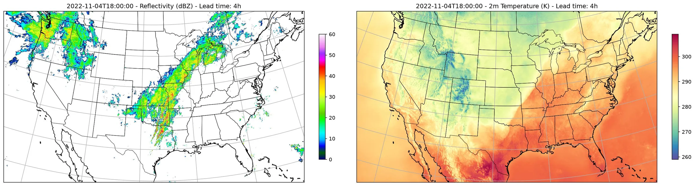

Running StormCast-CONUS Inference¶
Basic StormCast-CONUS inference workflow for the full Continental United States.
This example demonstrates how to run a single-member forecast using StormCast-CONUS, a generative convection-allowing model at 3 km resolution over the full CONUS HRRR domain. For details about the model see
In this example you will learn:
- How to instantiate StormCast-CONUS from a model package
- Creating an HRRR initial-condition data source and a GFS forecast conditioning source
- Running a deterministic forecast with
earth2studio.run.deterministic - Post-processing and plotting composite reflectivity and 2-m temperature
Set Up¶
StormCast-CONUS requires a low-resolution global conditioning source. We use
earth2studio.data.GFS_FX (the default), which provides GFS forecast
fields interpolated to the HRRR grid. An analysis source such as
earth2studio.data.ARCO can also be used.
import os
import numpy as np
from loguru import logger
from tqdm import tqdm
logger.remove()
logger.add(lambda msg: tqdm.write(msg, end=""), colorize=True)
os.makedirs("outputs", exist_ok=True)
from dotenv import load_dotenv
load_dotenv()
from earth2studio.data import HRRR
from earth2studio.io import ZarrBackend
from earth2studio.models.px import StormCastCONUS
# Load the model from the default package
package = StormCastCONUS.load_default_package()
# By default, the model uses GFS_FX as the conditioning data source
# Thus we do not need to explicitly specify the conditioning data source
model = StormCastCONUS.load_model(package)
# Create the HRRR initial-condition data source
data = HRRR()
# Create the IO handler, store in memory
io = ZarrBackend()
Console output362 lines
/__w/earth2studio/earth2studio/.venv/lib/python3.13/site-packages/torch/cuda/__init__.py:64: FutureWarning: The pynvml package is deprecated. Please install nvidia-ml-py instead. If you did not install pynvml directly, please report this to the maintainers of the package that installed pynvml for you.
import pynvml # type: ignore[import]
WARNING[XFORMERS]: xFormers can't load C++/CUDA extensions. xFormers was built for:
PyTorch 2.10.0+cu128 with CUDA 1208 (you have 2.13.0+cu130)
Python 3.10.19 (you have 3.13.13)
Please reinstall xformers (see https://github.com/facebookresearch/xformers#installing-xformers)
Memory-efficient attention, SwiGLU, sparse and more won't be available.
Set XFORMERS_MORE_DETAILS=1 for more details
CuPy distance computation test failed with error: cuVS >= 24.12 or pylibraft < 24.12 should be installed to use this feature
Downloading config.json: 0%| | 0.00/37.0 [00:00<?, ?B/s]
Downloading config.json: 100%|██████████| 37.0/37.0 [00:00<00:00, 279B/s]
Downloading config.json: 100%|██████████| 37.0/37.0 [00:00<00:00, 274B/s]
Downloading model.yaml: 0%| | 0.00/122 [00:00<?, ?B/s]
Downloading model.yaml: 100%|██████████| 122/122 [00:00<00:00, 874B/s]
Downloading model.yaml: 100%|██████████| 122/122 [00:00<00:00, 857B/s]
Downloading StormCastCONUS-high.mdlus: 0%| | 0.00/0.99G [00:00<?, ?B/s]
Downloading StormCastCONUS-high.mdlus: 1%| | 10.0M/0.99G [00:01<03:14, 5.42MB/s]
Downloading StormCastCONUS-high.mdlus: 2%|▏ | 20.0M/0.99G [00:02<01:25, 12.2MB/s]
Downloading StormCastCONUS-high.mdlus: 3%|▎ | 30.0M/0.99G [00:02<00:50, 20.3MB/s]
Downloading StormCastCONUS-high.mdlus: 4%|▍ | 40.0M/0.99G [00:02<00:34, 29.5MB/s]
Downloading StormCastCONUS-high.mdlus: 5%|▍ | 50.0M/0.99G [00:02<00:26, 38.8MB/s]
Downloading StormCastCONUS-high.mdlus: 6%|▌ | 60.0M/0.99G [00:02<00:22, 45.4MB/s]
Downloading StormCastCONUS-high.mdlus: 7%|▋ | 70.0M/0.99G [00:02<00:23, 41.8MB/s]
Downloading StormCastCONUS-high.mdlus: 8%|▊ | 80.0M/0.99G [00:02<00:19, 50.3MB/s]
Downloading StormCastCONUS-high.mdlus: 9%|▉ | 90.0M/0.99G [00:03<00:16, 57.2MB/s]
Downloading StormCastCONUS-high.mdlus: 10%|▉ | 100M/0.99G [00:03<00:16, 57.3MB/s]
Downloading StormCastCONUS-high.mdlus: 11%|█ | 110M/0.99G [00:03<00:15, 62.1MB/s]
Downloading StormCastCONUS-high.mdlus: 12%|█▏ | 120M/0.99G [00:03<00:14, 63.8MB/s]
Downloading StormCastCONUS-high.mdlus: 13%|█▎ | 130M/0.99G [00:03<00:16, 56.3MB/s]
Downloading StormCastCONUS-high.mdlus: 14%|█▍ | 140M/0.99G [00:03<00:14, 61.5MB/s]
Downloading StormCastCONUS-high.mdlus: 15%|█▍ | 150M/0.99G [00:04<00:15, 57.4MB/s]
Downloading StormCastCONUS-high.mdlus: 16%|█▌ | 160M/0.99G [00:04<00:13, 65.8MB/s]
Downloading StormCastCONUS-high.mdlus: 17%|█▋ | 170M/0.99G [00:04<00:19, 45.0MB/s]
Downloading StormCastCONUS-high.mdlus: 18%|█▊ | 180M/0.99G [00:04<00:16, 54.0MB/s]
Downloading StormCastCONUS-high.mdlus: 19%|█▊ | 190M/0.99G [00:05<00:18, 45.5MB/s]
Downloading StormCastCONUS-high.mdlus: 20%|█▉ | 200M/0.99G [00:05<00:21, 38.9MB/s]
Downloading StormCastCONUS-high.mdlus: 21%|██ | 210M/0.99G [00:05<00:18, 45.6MB/s]
Downloading StormCastCONUS-high.mdlus: 22%|██▏ | 220M/0.99G [00:05<00:15, 54.7MB/s]
Downloading StormCastCONUS-high.mdlus: 23%|██▎ | 230M/0.99G [00:05<00:16, 49.3MB/s]
Downloading StormCastCONUS-high.mdlus: 24%|██▎ | 240M/0.99G [00:06<00:13, 58.5MB/s]
Downloading StormCastCONUS-high.mdlus: 25%|██▍ | 250M/0.99G [00:06<00:13, 61.0MB/s]
Downloading StormCastCONUS-high.mdlus: 26%|██▌ | 260M/0.99G [00:06<00:18, 43.7MB/s]
Downloading StormCastCONUS-high.mdlus: 27%|██▋ | 270M/0.99G [00:06<00:15, 50.9MB/s]
Downloading StormCastCONUS-high.mdlus: 28%|██▊ | 280M/0.99G [00:06<00:16, 47.2MB/s]
Downloading StormCastCONUS-high.mdlus: 30%|██▉ | 300M/0.99G [00:07<00:13, 56.0MB/s]
Downloading StormCastCONUS-high.mdlus: 31%|███ | 310M/0.99G [00:07<00:13, 52.7MB/s]
Downloading StormCastCONUS-high.mdlus: 32%|███▏ | 320M/0.99G [00:07<00:14, 49.5MB/s]
Downloading StormCastCONUS-high.mdlus: 34%|███▎ | 340M/0.99G [00:08<00:13, 53.6MB/s]
Downloading StormCastCONUS-high.mdlus: 36%|███▌ | 360M/0.99G [00:08<00:11, 60.3MB/s]
Downloading StormCastCONUS-high.mdlus: 37%|███▋ | 380M/0.99G [00:08<00:10, 66.0MB/s]
Downloading StormCastCONUS-high.mdlus: 38%|███▊ | 390M/0.99G [00:08<00:12, 54.4MB/s]
Downloading StormCastCONUS-high.mdlus: 39%|███▉ | 400M/0.99G [00:09<00:11, 56.9MB/s]
Downloading StormCastCONUS-high.mdlus: 40%|████ | 410M/0.99G [00:09<00:12, 51.0MB/s]
Downloading StormCastCONUS-high.mdlus: 41%|████▏ | 420M/0.99G [00:09<00:11, 52.4MB/s]
Downloading StormCastCONUS-high.mdlus: 42%|████▏ | 430M/0.99G [00:09<00:10, 59.2MB/s]
Downloading StormCastCONUS-high.mdlus: 43%|████▎ | 440M/0.99G [00:09<00:09, 61.6MB/s]
Downloading StormCastCONUS-high.mdlus: 44%|████▍ | 450M/0.99G [00:10<00:11, 52.1MB/s]
Downloading StormCastCONUS-high.mdlus: 46%|████▋ | 470M/0.99G [00:10<00:09, 62.4MB/s]
Downloading StormCastCONUS-high.mdlus: 48%|████▊ | 490M/0.99G [00:10<00:08, 61.9MB/s]
Downloading StormCastCONUS-high.mdlus: 50%|█████ | 510M/0.99G [00:10<00:07, 67.0MB/s]
Downloading StormCastCONUS-high.mdlus: 51%|█████▏ | 520M/0.99G [00:11<00:08, 59.4MB/s]
Downloading StormCastCONUS-high.mdlus: 52%|█████▏ | 530M/0.99G [00:11<00:09, 52.3MB/s]
Downloading StormCastCONUS-high.mdlus: 54%|█████▍ | 550M/0.99G [00:11<00:08, 60.5MB/s]
Downloading StormCastCONUS-high.mdlus: 56%|█████▌ | 570M/0.99G [00:12<00:06, 68.0MB/s]
Downloading StormCastCONUS-high.mdlus: 57%|█████▋ | 580M/0.99G [00:12<00:07, 60.1MB/s]
Downloading StormCastCONUS-high.mdlus: 58%|█████▊ | 590M/0.99G [00:12<00:06, 64.5MB/s]
Downloading StormCastCONUS-high.mdlus: 59%|█████▉ | 600M/0.99G [00:12<00:06, 63.6MB/s]
Downloading StormCastCONUS-high.mdlus: 60%|██████ | 610M/0.99G [00:12<00:06, 67.3MB/s]
Downloading StormCastCONUS-high.mdlus: 61%|██████ | 620M/0.99G [00:12<00:06, 67.9MB/s]
Downloading StormCastCONUS-high.mdlus: 62%|██████▏ | 630M/0.99G [00:12<00:06, 66.9MB/s]
Downloading StormCastCONUS-high.mdlus: 63%|██████▎ | 640M/0.99G [00:13<00:06, 58.3MB/s]
Downloading StormCastCONUS-high.mdlus: 64%|██████▍ | 650M/0.99G [00:13<00:07, 50.4MB/s]
Downloading StormCastCONUS-high.mdlus: 65%|██████▌ | 660M/0.99G [00:14<00:11, 33.4MB/s]
Downloading StormCastCONUS-high.mdlus: 66%|██████▌ | 670M/0.99G [00:14<00:12, 29.9MB/s]
Downloading StormCastCONUS-high.mdlus: 67%|██████▋ | 680M/0.99G [00:15<00:14, 24.6MB/s]
Downloading StormCastCONUS-high.mdlus: 68%|██████▊ | 690M/0.99G [00:15<00:12, 28.0MB/s]
Downloading StormCastCONUS-high.mdlus: 69%|██████▉ | 700M/0.99G [00:15<00:11, 28.8MB/s]
Downloading StormCastCONUS-high.mdlus: 70%|███████ | 710M/0.99G [00:16<00:10, 30.5MB/s]
Downloading StormCastCONUS-high.mdlus: 71%|███████ | 720M/0.99G [00:16<00:08, 34.2MB/s]
Downloading StormCastCONUS-high.mdlus: 72%|███████▏ | 730M/0.99G [00:16<00:07, 38.5MB/s]
Downloading StormCastCONUS-high.mdlus: 73%|███████▎ | 740M/0.99G [00:16<00:06, 42.7MB/s]
Downloading StormCastCONUS-high.mdlus: 74%|███████▍ | 750M/0.99G [00:16<00:05, 47.2MB/s]
Downloading StormCastCONUS-high.mdlus: 75%|███████▍ | 760M/0.99G [00:16<00:05, 49.2MB/s]
Downloading StormCastCONUS-high.mdlus: 76%|███████▌ | 770M/0.99G [00:17<00:06, 41.7MB/s]
Downloading StormCastCONUS-high.mdlus: 77%|███████▋ | 780M/0.99G [00:17<00:05, 46.5MB/s]
Downloading StormCastCONUS-high.mdlus: 78%|███████▊ | 790M/0.99G [00:17<00:04, 50.6MB/s]
Downloading StormCastCONUS-high.mdlus: 79%|███████▉ | 800M/0.99G [00:17<00:04, 51.0MB/s]
Downloading StormCastCONUS-high.mdlus: 80%|███████▉ | 810M/0.99G [00:18<00:04, 47.7MB/s]
Downloading StormCastCONUS-high.mdlus: 81%|████████ | 820M/0.99G [00:18<00:03, 56.2MB/s]
Downloading StormCastCONUS-high.mdlus: 82%|████████▏ | 830M/0.99G [00:18<00:03, 55.8MB/s]
Downloading StormCastCONUS-high.mdlus: 83%|████████▎ | 840M/0.99G [00:18<00:03, 51.4MB/s]
Downloading StormCastCONUS-high.mdlus: 84%|████████▍ | 850M/0.99G [00:18<00:02, 59.1MB/s]
Downloading StormCastCONUS-high.mdlus: 85%|████████▍ | 860M/0.99G [00:18<00:02, 61.4MB/s]
Downloading StormCastCONUS-high.mdlus: 86%|████████▌ | 870M/0.99G [00:19<00:02, 59.6MB/s]
Downloading StormCastCONUS-high.mdlus: 87%|████████▋ | 880M/0.99G [00:19<00:02, 60.4MB/s]
Downloading StormCastCONUS-high.mdlus: 88%|████████▊ | 890M/0.99G [00:19<00:02, 56.2MB/s]
Downloading StormCastCONUS-high.mdlus: 89%|████████▉ | 900M/0.99G [00:19<00:02, 45.4MB/s]
Downloading StormCastCONUS-high.mdlus: 91%|█████████ | 920M/0.99G [00:20<00:01, 49.9MB/s]
Downloading StormCastCONUS-high.mdlus: 93%|█████████▎| 940M/0.99G [00:20<00:01, 59.0MB/s]
Downloading StormCastCONUS-high.mdlus: 94%|█████████▎| 950M/0.99G [00:20<00:01, 56.5MB/s]
Downloading StormCastCONUS-high.mdlus: 95%|█████████▍| 960M/0.99G [00:20<00:01, 52.0MB/s]
Downloading StormCastCONUS-high.mdlus: 96%|█████████▌| 970M/0.99G [00:21<00:00, 56.7MB/s]
Downloading StormCastCONUS-high.mdlus: 97%|█████████▋| 980M/0.99G [00:21<00:00, 52.8MB/s]
Downloading StormCastCONUS-high.mdlus: 99%|█████████▊| 0.98G/0.99G [00:21<00:00, 50.6MB/s]
Downloading StormCastCONUS-high.mdlus: 100%|██████████| 0.99G/0.99G [00:21<00:00, 60.9MB/s]
Downloading StormCastCONUS-high.mdlus: 100%|██████████| 0.99G/0.99G [00:21<00:00, 48.7MB/s]
Downloading StormCastCONUS-pz-low.mdlus: 0%| | 0.00/0.99G [00:00<?, ?B/s]
Downloading StormCastCONUS-pz-low.mdlus: 1%| | 10.0M/0.99G [00:01<02:12, 7.95MB/s]
Downloading StormCastCONUS-pz-low.mdlus: 2%|▏ | 20.0M/0.99G [00:01<01:06, 15.6MB/s]
Downloading StormCastCONUS-pz-low.mdlus: 3%|▎ | 30.0M/0.99G [00:01<00:40, 25.3MB/s]
Downloading StormCastCONUS-pz-low.mdlus: 4%|▍ | 40.0M/0.99G [00:01<00:29, 34.6MB/s]
Downloading StormCastCONUS-pz-low.mdlus: 5%|▍ | 50.0M/0.99G [00:01<00:23, 42.5MB/s]
Downloading StormCastCONUS-pz-low.mdlus: 6%|▌ | 60.0M/0.99G [00:02<00:21, 47.6MB/s]
Downloading StormCastCONUS-pz-low.mdlus: 7%|▋ | 70.0M/0.99G [00:02<00:23, 42.9MB/s]
Downloading StormCastCONUS-pz-low.mdlus: 8%|▊ | 80.0M/0.99G [00:02<00:19, 49.4MB/s]
Downloading StormCastCONUS-pz-low.mdlus: 9%|▉ | 90.0M/0.99G [00:02<00:17, 54.1MB/s]
Downloading StormCastCONUS-pz-low.mdlus: 10%|▉ | 100M/0.99G [00:02<00:17, 56.0MB/s]
Downloading StormCastCONUS-pz-low.mdlus: 11%|█ | 110M/0.99G [00:02<00:15, 62.2MB/s]
Downloading StormCastCONUS-pz-low.mdlus: 12%|█▏ | 120M/0.99G [00:03<00:13, 67.9MB/s]
Downloading StormCastCONUS-pz-low.mdlus: 13%|█▎ | 130M/0.99G [00:03<00:17, 52.6MB/s]
Downloading StormCastCONUS-pz-low.mdlus: 14%|█▍ | 140M/0.99G [00:03<00:15, 58.2MB/s]
Downloading StormCastCONUS-pz-low.mdlus: 15%|█▍ | 150M/0.99G [00:03<00:21, 41.8MB/s]
Downloading StormCastCONUS-pz-low.mdlus: 16%|█▌ | 160M/0.99G [00:04<00:17, 50.1MB/s]
Downloading StormCastCONUS-pz-low.mdlus: 17%|█▋ | 170M/0.99G [00:04<00:21, 40.8MB/s]
Downloading StormCastCONUS-pz-low.mdlus: 18%|█▊ | 180M/0.99G [00:04<00:18, 48.2MB/s]
Downloading StormCastCONUS-pz-low.mdlus: 19%|█▊ | 190M/0.99G [00:04<00:19, 44.9MB/s]
Downloading StormCastCONUS-pz-low.mdlus: 20%|█▉ | 200M/0.99G [00:05<00:20, 40.7MB/s]
Downloading StormCastCONUS-pz-low.mdlus: 21%|██ | 210M/0.99G [00:05<00:18, 45.1MB/s]
Downloading StormCastCONUS-pz-low.mdlus: 22%|██▏ | 220M/0.99G [00:05<00:17, 47.9MB/s]
Downloading StormCastCONUS-pz-low.mdlus: 23%|██▎ | 230M/0.99G [00:05<00:15, 53.6MB/s]
Downloading StormCastCONUS-pz-low.mdlus: 24%|██▎ | 240M/0.99G [00:05<00:13, 58.5MB/s]
Downloading StormCastCONUS-pz-low.mdlus: 25%|██▍ | 250M/0.99G [00:05<00:13, 58.1MB/s]
Downloading StormCastCONUS-pz-low.mdlus: 26%|██▌ | 260M/0.99G [00:06<00:16, 49.1MB/s]
Downloading StormCastCONUS-pz-low.mdlus: 27%|██▋ | 270M/0.99G [00:06<00:14, 53.3MB/s]
Downloading StormCastCONUS-pz-low.mdlus: 28%|██▊ | 280M/0.99G [00:06<00:14, 53.7MB/s]
Downloading StormCastCONUS-pz-low.mdlus: 29%|██▊ | 290M/0.99G [00:06<00:13, 56.8MB/s]
Downloading StormCastCONUS-pz-low.mdlus: 30%|██▉ | 300M/0.99G [00:06<00:12, 57.8MB/s]
Downloading StormCastCONUS-pz-low.mdlus: 31%|███ | 310M/0.99G [00:07<00:12, 58.2MB/s]
Downloading StormCastCONUS-pz-low.mdlus: 32%|███▏ | 320M/0.99G [00:07<00:15, 46.5MB/s]
Downloading StormCastCONUS-pz-low.mdlus: 33%|███▎ | 330M/0.99G [00:07<00:14, 50.6MB/s]
Downloading StormCastCONUS-pz-low.mdlus: 34%|███▎ | 340M/0.99G [00:07<00:12, 56.6MB/s]
Downloading StormCastCONUS-pz-low.mdlus: 35%|███▍ | 350M/0.99G [00:07<00:12, 57.2MB/s]
Downloading StormCastCONUS-pz-low.mdlus: 36%|███▌ | 360M/0.99G [00:10<00:48, 14.0MB/s]
Downloading StormCastCONUS-pz-low.mdlus: 37%|███▋ | 370M/0.99G [00:10<00:36, 18.6MB/s]
Downloading StormCastCONUS-pz-low.mdlus: 38%|███▊ | 390M/0.99G [00:10<00:24, 26.7MB/s]
Downloading StormCastCONUS-pz-low.mdlus: 40%|████ | 410M/0.99G [00:10<00:18, 34.2MB/s]
Downloading StormCastCONUS-pz-low.mdlus: 41%|████▏ | 420M/0.99G [00:11<00:16, 37.6MB/s]
Downloading StormCastCONUS-pz-low.mdlus: 42%|████▏ | 430M/0.99G [00:11<00:14, 43.4MB/s]
Downloading StormCastCONUS-pz-low.mdlus: 43%|████▎ | 440M/0.99G [00:11<00:13, 43.5MB/s]
Downloading StormCastCONUS-pz-low.mdlus: 44%|████▍ | 450M/0.99G [00:11<00:15, 38.2MB/s]
Downloading StormCastCONUS-pz-low.mdlus: 45%|████▌ | 460M/0.99G [00:12<00:14, 38.8MB/s]
Downloading StormCastCONUS-pz-low.mdlus: 46%|████▋ | 470M/0.99G [00:12<00:14, 39.6MB/s]
Downloading StormCastCONUS-pz-low.mdlus: 47%|████▋ | 480M/0.99G [00:12<00:12, 44.2MB/s]
Downloading StormCastCONUS-pz-low.mdlus: 48%|████▊ | 490M/0.99G [00:12<00:11, 47.0MB/s]
Downloading StormCastCONUS-pz-low.mdlus: 49%|████▉ | 500M/0.99G [00:12<00:10, 51.7MB/s]
Downloading StormCastCONUS-pz-low.mdlus: 50%|█████ | 510M/0.99G [00:13<00:13, 40.4MB/s]
Downloading StormCastCONUS-pz-low.mdlus: 51%|█████▏ | 520M/0.99G [00:13<00:10, 47.8MB/s]
Downloading StormCastCONUS-pz-low.mdlus: 52%|█████▏ | 530M/0.99G [00:13<00:09, 53.2MB/s]
Downloading StormCastCONUS-pz-low.mdlus: 53%|█████▎ | 540M/0.99G [00:13<00:08, 61.1MB/s]
Downloading StormCastCONUS-pz-low.mdlus: 54%|█████▍ | 550M/0.99G [00:13<00:07, 63.6MB/s]
Downloading StormCastCONUS-pz-low.mdlus: 55%|█████▌ | 560M/0.99G [00:13<00:06, 71.4MB/s]
Downloading StormCastCONUS-pz-low.mdlus: 56%|█████▌ | 570M/0.99G [00:13<00:05, 77.8MB/s]
Downloading StormCastCONUS-pz-low.mdlus: 57%|█████▋ | 580M/0.99G [00:14<00:07, 58.9MB/s]
Downloading StormCastCONUS-pz-low.mdlus: 58%|█████▊ | 590M/0.99G [00:14<00:06, 64.4MB/s]
Downloading StormCastCONUS-pz-low.mdlus: 59%|█████▉ | 600M/0.99G [00:14<00:07, 61.9MB/s]
Downloading StormCastCONUS-pz-low.mdlus: 60%|██████ | 610M/0.99G [00:14<00:06, 61.7MB/s]
Downloading StormCastCONUS-pz-low.mdlus: 61%|██████ | 620M/0.99G [00:14<00:06, 61.4MB/s]
Downloading StormCastCONUS-pz-low.mdlus: 62%|██████▏ | 630M/0.99G [00:15<00:06, 61.6MB/s]
Downloading StormCastCONUS-pz-low.mdlus: 63%|██████▎ | 640M/0.99G [00:15<00:06, 63.1MB/s]
Downloading StormCastCONUS-pz-low.mdlus: 64%|██████▍ | 650M/0.99G [00:15<00:06, 56.4MB/s]
Downloading StormCastCONUS-pz-low.mdlus: 65%|██████▌ | 660M/0.99G [00:15<00:06, 53.5MB/s]
Downloading StormCastCONUS-pz-low.mdlus: 66%|██████▌ | 670M/0.99G [00:15<00:06, 59.4MB/s]
Downloading StormCastCONUS-pz-low.mdlus: 67%|██████▋ | 680M/0.99G [00:15<00:05, 60.0MB/s]
Downloading StormCastCONUS-pz-low.mdlus: 68%|██████▊ | 690M/0.99G [00:16<00:05, 59.6MB/s]
Downloading StormCastCONUS-pz-low.mdlus: 69%|██████▉ | 700M/0.99G [00:16<00:07, 44.1MB/s]
Downloading StormCastCONUS-pz-low.mdlus: 70%|███████ | 710M/0.99G [00:16<00:07, 43.0MB/s]
Downloading StormCastCONUS-pz-low.mdlus: 71%|███████ | 720M/0.99G [00:16<00:06, 47.8MB/s]
Downloading StormCastCONUS-pz-low.mdlus: 72%|███████▏ | 730M/0.99G [00:17<00:06, 49.5MB/s]
Downloading StormCastCONUS-pz-low.mdlus: 73%|███████▎ | 740M/0.99G [00:17<00:05, 49.8MB/s]
Downloading StormCastCONUS-pz-low.mdlus: 74%|███████▍ | 750M/0.99G [00:17<00:04, 57.8MB/s]
Downloading StormCastCONUS-pz-low.mdlus: 75%|███████▍ | 760M/0.99G [00:17<00:04, 54.9MB/s]
Downloading StormCastCONUS-pz-low.mdlus: 76%|███████▌ | 770M/0.99G [00:17<00:05, 48.9MB/s]
Downloading StormCastCONUS-pz-low.mdlus: 77%|███████▋ | 780M/0.99G [00:18<00:04, 57.5MB/s]
Downloading StormCastCONUS-pz-low.mdlus: 78%|███████▊ | 790M/0.99G [00:18<00:04, 53.6MB/s]
Downloading StormCastCONUS-pz-low.mdlus: 79%|███████▉ | 800M/0.99G [00:18<00:04, 46.0MB/s]
Downloading StormCastCONUS-pz-low.mdlus: 80%|███████▉ | 810M/0.99G [00:18<00:04, 50.3MB/s]
Downloading StormCastCONUS-pz-low.mdlus: 81%|████████ | 820M/0.99G [00:18<00:03, 55.3MB/s]
Downloading StormCastCONUS-pz-low.mdlus: 82%|████████▏ | 830M/0.99G [00:19<00:03, 55.6MB/s]
Downloading StormCastCONUS-pz-low.mdlus: 83%|████████▎ | 840M/0.99G [00:19<00:03, 47.9MB/s]
Downloading StormCastCONUS-pz-low.mdlus: 84%|████████▍ | 850M/0.99G [00:19<00:03, 47.7MB/s]
Downloading StormCastCONUS-pz-low.mdlus: 85%|████████▍ | 860M/0.99G [00:19<00:03, 51.9MB/s]
Downloading StormCastCONUS-pz-low.mdlus: 86%|████████▌ | 870M/0.99G [00:19<00:03, 49.6MB/s]
Downloading StormCastCONUS-pz-low.mdlus: 87%|████████▋ | 880M/0.99G [00:20<00:02, 53.9MB/s]
Downloading StormCastCONUS-pz-low.mdlus: 88%|████████▊ | 890M/0.99G [00:20<00:02, 51.2MB/s]
Downloading StormCastCONUS-pz-low.mdlus: 89%|████████▉ | 900M/0.99G [00:21<00:05, 21.4MB/s]
Downloading StormCastCONUS-pz-low.mdlus: 90%|████████▉ | 910M/0.99G [00:21<00:04, 25.9MB/s]
Downloading StormCastCONUS-pz-low.mdlus: 91%|█████████ | 920M/0.99G [00:21<00:03, 30.4MB/s]
Downloading StormCastCONUS-pz-low.mdlus: 92%|█████████▏| 930M/0.99G [00:22<00:02, 36.4MB/s]
Downloading StormCastCONUS-pz-low.mdlus: 93%|█████████▎| 940M/0.99G [00:22<00:01, 41.0MB/s]
Downloading StormCastCONUS-pz-low.mdlus: 94%|█████████▎| 950M/0.99G [00:22<00:01, 34.9MB/s]
Downloading StormCastCONUS-pz-low.mdlus: 95%|█████████▍| 960M/0.99G [00:22<00:01, 35.6MB/s]
Downloading StormCastCONUS-pz-low.mdlus: 96%|█████████▌| 970M/0.99G [00:23<00:01, 38.8MB/s]
Downloading StormCastCONUS-pz-low.mdlus: 97%|█████████▋| 980M/0.99G [00:23<00:00, 40.1MB/s]
Downloading StormCastCONUS-pz-low.mdlus: 98%|█████████▊| 990M/0.99G [00:23<00:00, 44.2MB/s]
Downloading StormCastCONUS-pz-low.mdlus: 99%|█████████▊| 0.98G/0.99G [00:23<00:00, 42.4MB/s]
Downloading StormCastCONUS-pz-low.mdlus: 100%|█████████▉| 0.99G/0.99G [00:24<00:00, 36.1MB/s]
Downloading StormCastCONUS-pz-low.mdlus: 100%|██████████| 0.99G/0.99G [00:24<00:00, 43.8MB/s]
Downloading StormCastCONUS-tq-low.mdlus: 0%| | 0.00/0.99G [00:00<?, ?B/s]
Downloading StormCastCONUS-tq-low.mdlus: 1%| | 10.0M/0.99G [00:01<01:44, 10.1MB/s]
Downloading StormCastCONUS-tq-low.mdlus: 2%|▏ | 20.0M/0.99G [00:01<00:59, 17.4MB/s]
Downloading StormCastCONUS-tq-low.mdlus: 4%|▍ | 40.0M/0.99G [00:01<00:29, 34.2MB/s]
Downloading StormCastCONUS-tq-low.mdlus: 6%|▌ | 60.0M/0.99G [00:01<00:21, 46.3MB/s]
Downloading StormCastCONUS-tq-low.mdlus: 7%|▋ | 70.0M/0.99G [00:02<00:21, 46.4MB/s]
Downloading StormCastCONUS-tq-low.mdlus: 8%|▊ | 80.0M/0.99G [00:02<00:18, 52.9MB/s]
Downloading StormCastCONUS-tq-low.mdlus: 9%|▉ | 90.0M/0.99G [00:02<00:21, 44.5MB/s]
Downloading StormCastCONUS-tq-low.mdlus: 10%|▉ | 100M/0.99G [00:02<00:21, 44.1MB/s]
Downloading StormCastCONUS-tq-low.mdlus: 11%|█ | 110M/0.99G [00:03<00:22, 41.7MB/s]
Downloading StormCastCONUS-tq-low.mdlus: 12%|█▏ | 120M/0.99G [00:04<00:42, 21.9MB/s]
Downloading StormCastCONUS-tq-low.mdlus: 13%|█▎ | 130M/0.99G [00:04<00:37, 24.8MB/s]
Downloading StormCastCONUS-tq-low.mdlus: 14%|█▍ | 140M/0.99G [00:04<00:29, 31.2MB/s]
Downloading StormCastCONUS-tq-low.mdlus: 15%|█▍ | 150M/0.99G [00:04<00:26, 34.2MB/s]
Downloading StormCastCONUS-tq-low.mdlus: 17%|█▋ | 170M/0.99G [00:05<00:24, 36.7MB/s]
Downloading StormCastCONUS-tq-low.mdlus: 19%|█▊ | 190M/0.99G [00:05<00:18, 47.8MB/s]
Downloading StormCastCONUS-tq-low.mdlus: 20%|█▉ | 200M/0.99G [00:05<00:18, 46.5MB/s]
Downloading StormCastCONUS-tq-low.mdlus: 21%|██ | 210M/0.99G [00:05<00:16, 49.9MB/s]
Downloading StormCastCONUS-tq-low.mdlus: 23%|██▎ | 230M/0.99G [00:06<00:19, 42.0MB/s]
Downloading StormCastCONUS-tq-low.mdlus: 25%|██▍ | 250M/0.99G [00:07<00:19, 41.2MB/s]
Downloading StormCastCONUS-tq-low.mdlus: 26%|██▌ | 260M/0.99G [00:07<00:22, 34.7MB/s]
Downloading StormCastCONUS-tq-low.mdlus: 28%|██▊ | 280M/0.99G [00:07<00:18, 42.2MB/s]
Downloading StormCastCONUS-tq-low.mdlus: 30%|██▉ | 300M/0.99G [00:08<00:14, 51.2MB/s]
Downloading StormCastCONUS-tq-low.mdlus: 31%|███ | 310M/0.99G [00:08<00:16, 44.1MB/s]
Downloading StormCastCONUS-tq-low.mdlus: 32%|███▏ | 320M/0.99G [00:08<00:14, 48.7MB/s]
Downloading StormCastCONUS-tq-low.mdlus: 34%|███▎ | 340M/0.99G [00:09<00:16, 43.4MB/s]
Downloading StormCastCONUS-tq-low.mdlus: 35%|███▍ | 350M/0.99G [00:09<00:14, 47.5MB/s]
Downloading StormCastCONUS-tq-low.mdlus: 36%|███▌ | 360M/0.99G [00:09<00:16, 41.9MB/s]
Downloading StormCastCONUS-tq-low.mdlus: 37%|███▋ | 380M/0.99G [00:10<00:14, 45.5MB/s]
Downloading StormCastCONUS-tq-low.mdlus: 38%|███▊ | 390M/0.99G [00:10<00:13, 48.3MB/s]
Downloading StormCastCONUS-tq-low.mdlus: 40%|████ | 410M/0.99G [00:10<00:11, 56.9MB/s]
Downloading StormCastCONUS-tq-low.mdlus: 41%|████▏ | 420M/0.99G [00:10<00:11, 55.3MB/s]
Downloading StormCastCONUS-tq-low.mdlus: 43%|████▎ | 440M/0.99G [00:11<00:11, 53.2MB/s]
Downloading StormCastCONUS-tq-low.mdlus: 44%|████▍ | 450M/0.99G [00:11<00:12, 48.0MB/s]
Downloading StormCastCONUS-tq-low.mdlus: 45%|████▌ | 460M/0.99G [00:11<00:11, 50.3MB/s]
Downloading StormCastCONUS-tq-low.mdlus: 46%|████▋ | 470M/0.99G [00:12<00:14, 39.5MB/s]
Downloading StormCastCONUS-tq-low.mdlus: 48%|████▊ | 490M/0.99G [00:12<00:13, 40.7MB/s]
Downloading StormCastCONUS-tq-low.mdlus: 50%|█████ | 510M/0.99G [00:12<00:11, 44.2MB/s]
Downloading StormCastCONUS-tq-low.mdlus: 51%|█████▏ | 520M/0.99G [00:13<00:11, 44.8MB/s]
Downloading StormCastCONUS-tq-low.mdlus: 52%|█████▏ | 530M/0.99G [00:13<00:11, 43.1MB/s]
Downloading StormCastCONUS-tq-low.mdlus: 54%|█████▍ | 550M/0.99G [00:14<00:13, 35.1MB/s]
Downloading StormCastCONUS-tq-low.mdlus: 56%|█████▌ | 570M/0.99G [00:14<00:10, 43.1MB/s]
Downloading StormCastCONUS-tq-low.mdlus: 57%|█████▋ | 580M/0.99G [00:14<00:10, 44.3MB/s]
Downloading StormCastCONUS-tq-low.mdlus: 59%|█████▉ | 600M/0.99G [00:14<00:07, 59.5MB/s]
Downloading StormCastCONUS-tq-low.mdlus: 61%|██████ | 620M/0.99G [00:15<00:06, 60.9MB/s]
Downloading StormCastCONUS-tq-low.mdlus: 63%|██████▎ | 640M/0.99G [00:15<00:07, 53.9MB/s]
Downloading StormCastCONUS-tq-low.mdlus: 64%|██████▍ | 650M/0.99G [00:15<00:06, 58.3MB/s]
Downloading StormCastCONUS-tq-low.mdlus: 65%|██████▌ | 660M/0.99G [00:16<00:06, 53.7MB/s]
Downloading StormCastCONUS-tq-low.mdlus: 67%|██████▋ | 680M/0.99G [00:16<00:06, 50.3MB/s]
Downloading StormCastCONUS-tq-low.mdlus: 69%|██████▉ | 700M/0.99G [00:16<00:05, 60.3MB/s]
Downloading StormCastCONUS-tq-low.mdlus: 70%|███████ | 710M/0.99G [00:16<00:04, 64.3MB/s]
Downloading StormCastCONUS-tq-low.mdlus: 72%|███████▏ | 730M/0.99G [00:17<00:04, 72.0MB/s]
Downloading StormCastCONUS-tq-low.mdlus: 73%|███████▎ | 740M/0.99G [00:17<00:04, 66.8MB/s]
Downloading StormCastCONUS-tq-low.mdlus: 75%|███████▍ | 760M/0.99G [00:17<00:03, 73.9MB/s]
Downloading StormCastCONUS-tq-low.mdlus: 76%|███████▌ | 770M/0.99G [00:17<00:04, 56.8MB/s]
Downloading StormCastCONUS-tq-low.mdlus: 77%|███████▋ | 780M/0.99G [00:18<00:04, 58.7MB/s]
Downloading StormCastCONUS-tq-low.mdlus: 78%|███████▊ | 790M/0.99G [00:18<00:03, 60.0MB/s]
Downloading StormCastCONUS-tq-low.mdlus: 80%|███████▉ | 810M/0.99G [00:18<00:02, 73.3MB/s]
Downloading StormCastCONUS-tq-low.mdlus: 82%|████████▏ | 830M/0.99G [00:18<00:02, 74.8MB/s]
Downloading StormCastCONUS-tq-low.mdlus: 83%|████████▎ | 840M/0.99G [00:18<00:02, 66.7MB/s]
Downloading StormCastCONUS-tq-low.mdlus: 84%|████████▍ | 850M/0.99G [00:18<00:02, 70.3MB/s]
Downloading StormCastCONUS-tq-low.mdlus: 86%|████████▌ | 870M/0.99G [00:19<00:02, 72.5MB/s]
Downloading StormCastCONUS-tq-low.mdlus: 88%|████████▊ | 890M/0.99G [00:19<00:01, 74.1MB/s]
Downloading StormCastCONUS-tq-low.mdlus: 89%|████████▉ | 900M/0.99G [00:19<00:01, 67.7MB/s]
Downloading StormCastCONUS-tq-low.mdlus: 91%|█████████ | 920M/0.99G [00:20<00:01, 70.8MB/s]
Downloading StormCastCONUS-tq-low.mdlus: 93%|█████████▎| 940M/0.99G [00:20<00:01, 72.6MB/s]
Downloading StormCastCONUS-tq-low.mdlus: 94%|█████████▎| 950M/0.99G [00:20<00:00, 75.2MB/s]
Downloading StormCastCONUS-tq-low.mdlus: 95%|█████████▍| 960M/0.99G [00:20<00:00, 62.2MB/s]
Downloading StormCastCONUS-tq-low.mdlus: 97%|█████████▋| 980M/0.99G [00:20<00:00, 65.4MB/s]
Downloading StormCastCONUS-tq-low.mdlus: 99%|█████████▊| 0.98G/0.99G [00:21<00:00, 67.4MB/s]
Downloading StormCastCONUS-tq-low.mdlus: 100%|██████████| 0.99G/0.99G [00:21<00:00, 72.1MB/s]
Downloading StormCastCONUS-tq-low.mdlus: 100%|██████████| 0.99G/0.99G [00:21<00:00, 49.6MB/s]
Downloading StormCastCONUS-uv-low.mdlus: 0%| | 0.00/0.99G [00:00<?, ?B/s]
Downloading StormCastCONUS-uv-low.mdlus: 1%| | 10.0M/0.99G [00:01<02:05, 8.37MB/s]
Downloading StormCastCONUS-uv-low.mdlus: 2%|▏ | 20.0M/0.99G [00:01<01:13, 14.2MB/s]
Downloading StormCastCONUS-uv-low.mdlus: 4%|▍ | 40.0M/0.99G [00:02<00:45, 22.6MB/s]
Downloading StormCastCONUS-uv-low.mdlus: 6%|▌ | 60.0M/0.99G [00:02<00:36, 27.3MB/s]
Downloading StormCastCONUS-uv-low.mdlus: 7%|▋ | 70.0M/0.99G [00:02<00:31, 31.9MB/s]
Downloading StormCastCONUS-uv-low.mdlus: 9%|▉ | 90.0M/0.99G [00:03<00:26, 36.3MB/s]
Downloading StormCastCONUS-uv-low.mdlus: 10%|▉ | 100M/0.99G [00:03<00:28, 33.3MB/s]
Downloading StormCastCONUS-uv-low.mdlus: 12%|█▏ | 120M/0.99G [00:04<00:22, 42.0MB/s]
Downloading StormCastCONUS-uv-low.mdlus: 13%|█▎ | 130M/0.99G [00:04<00:19, 47.0MB/s]
Downloading StormCastCONUS-uv-low.mdlus: 15%|█▍ | 150M/0.99G [00:04<00:16, 56.0MB/s]
Downloading StormCastCONUS-uv-low.mdlus: 17%|█▋ | 170M/0.99G [00:04<00:16, 53.1MB/s]
Downloading StormCastCONUS-uv-low.mdlus: 19%|█▊ | 190M/0.99G [00:05<00:13, 65.7MB/s]
Downloading StormCastCONUS-uv-low.mdlus: 20%|█▉ | 200M/0.99G [00:05<00:13, 64.8MB/s]
Downloading StormCastCONUS-uv-low.mdlus: 22%|██▏ | 220M/0.99G [00:05<00:10, 77.6MB/s]
Downloading StormCastCONUS-uv-low.mdlus: 23%|██▎ | 230M/0.99G [00:05<00:10, 75.4MB/s]
Downloading StormCastCONUS-uv-low.mdlus: 24%|██▎ | 240M/0.99G [00:05<00:10, 80.5MB/s]
Downloading StormCastCONUS-uv-low.mdlus: 26%|██▌ | 260M/0.99G [00:06<00:10, 77.5MB/s]
Downloading StormCastCONUS-uv-low.mdlus: 28%|██▊ | 280M/0.99G [00:06<00:10, 75.1MB/s]
Downloading StormCastCONUS-uv-low.mdlus: 30%|██▉ | 300M/0.99G [00:06<00:08, 85.8MB/s]
Downloading StormCastCONUS-uv-low.mdlus: 31%|███ | 310M/0.99G [00:06<00:08, 84.9MB/s]
Downloading StormCastCONUS-uv-low.mdlus: 32%|███▏ | 320M/0.99G [00:06<00:09, 76.1MB/s]
Downloading StormCastCONUS-uv-low.mdlus: 33%|███▎ | 330M/0.99G [00:06<00:08, 80.9MB/s]
Downloading StormCastCONUS-uv-low.mdlus: 35%|███▍ | 350M/0.99G [00:07<00:07, 94.3MB/s]
Downloading StormCastCONUS-uv-low.mdlus: 36%|███▌ | 360M/0.99G [00:09<00:38, 18.0MB/s]
Downloading StormCastCONUS-uv-low.mdlus: 37%|███▋ | 370M/0.99G [00:09<00:37, 17.8MB/s]
Downloading StormCastCONUS-uv-low.mdlus: 38%|███▊ | 390M/0.99G [00:10<00:25, 25.9MB/s]
Downloading StormCastCONUS-uv-low.mdlus: 39%|███▉ | 400M/0.99G [00:10<00:20, 30.8MB/s]
Downloading StormCastCONUS-uv-low.mdlus: 40%|████ | 410M/0.99G [00:10<00:19, 33.0MB/s]
Downloading StormCastCONUS-uv-low.mdlus: 41%|████▏ | 420M/0.99G [00:10<00:16, 36.7MB/s]
Downloading StormCastCONUS-uv-low.mdlus: 43%|████▎ | 440M/0.99G [00:11<00:18, 32.0MB/s]
Downloading StormCastCONUS-uv-low.mdlus: 44%|████▍ | 450M/0.99G [00:11<00:16, 36.0MB/s]
Downloading StormCastCONUS-uv-low.mdlus: 46%|████▋ | 470M/0.99G [00:11<00:11, 49.6MB/s]
Downloading StormCastCONUS-uv-low.mdlus: 48%|████▊ | 490M/0.99G [00:12<00:08, 62.8MB/s]
Downloading StormCastCONUS-uv-low.mdlus: 50%|█████ | 510M/0.99G [00:12<00:06, 76.3MB/s]
Downloading StormCastCONUS-uv-low.mdlus: 51%|█████▏ | 520M/0.99G [00:12<00:07, 69.5MB/s]
Downloading StormCastCONUS-uv-low.mdlus: 52%|█████▏ | 530M/0.99G [00:12<00:07, 63.8MB/s]
Downloading StormCastCONUS-uv-low.mdlus: 54%|█████▍ | 550M/0.99G [00:12<00:07, 62.6MB/s]
Downloading StormCastCONUS-uv-low.mdlus: 56%|█████▌ | 570M/0.99G [00:13<00:07, 63.8MB/s]
Downloading StormCastCONUS-uv-low.mdlus: 57%|█████▋ | 580M/0.99G [00:13<00:08, 50.8MB/s]
Downloading StormCastCONUS-uv-low.mdlus: 59%|█████▉ | 600M/0.99G [00:14<00:08, 49.0MB/s]
Downloading StormCastCONUS-uv-low.mdlus: 61%|██████ | 620M/0.99G [00:14<00:08, 47.0MB/s]
Downloading StormCastCONUS-uv-low.mdlus: 62%|██████▏ | 630M/0.99G [00:14<00:09, 44.5MB/s]
Downloading StormCastCONUS-uv-low.mdlus: 63%|██████▎ | 640M/0.99G [00:15<00:08, 48.1MB/s]
Downloading StormCastCONUS-uv-low.mdlus: 64%|██████▍ | 650M/0.99G [00:15<00:07, 53.8MB/s]
Downloading StormCastCONUS-uv-low.mdlus: 65%|██████▌ | 660M/0.99G [00:16<00:13, 27.9MB/s]
Downloading StormCastCONUS-uv-low.mdlus: 67%|██████▋ | 680M/0.99G [00:16<00:09, 36.0MB/s]
Downloading StormCastCONUS-uv-low.mdlus: 69%|██████▉ | 700M/0.99G [00:16<00:08, 39.3MB/s]
Downloading StormCastCONUS-uv-low.mdlus: 70%|███████ | 710M/0.99G [00:17<00:08, 38.7MB/s]
Downloading StormCastCONUS-uv-low.mdlus: 72%|███████▏ | 730M/0.99G [00:17<00:05, 50.4MB/s]
Downloading StormCastCONUS-uv-low.mdlus: 73%|███████▎ | 740M/0.99G [00:17<00:05, 48.1MB/s]
Downloading StormCastCONUS-uv-low.mdlus: 74%|███████▍ | 750M/0.99G [00:17<00:05, 54.0MB/s]
Downloading StormCastCONUS-uv-low.mdlus: 75%|███████▍ | 760M/0.99G [00:17<00:04, 57.6MB/s]
Downloading StormCastCONUS-uv-low.mdlus: 76%|███████▌ | 770M/0.99G [00:18<00:04, 51.4MB/s]
Downloading StormCastCONUS-uv-low.mdlus: 78%|███████▊ | 790M/0.99G [00:18<00:03, 59.0MB/s]
Downloading StormCastCONUS-uv-low.mdlus: 80%|███████▉ | 810M/0.99G [00:18<00:03, 69.0MB/s]
Downloading StormCastCONUS-uv-low.mdlus: 82%|████████▏ | 830M/0.99G [00:18<00:02, 74.6MB/s]
Downloading StormCastCONUS-uv-low.mdlus: 83%|████████▎ | 840M/0.99G [00:19<00:02, 63.2MB/s]
Downloading StormCastCONUS-uv-low.mdlus: 84%|████████▍ | 850M/0.99G [00:19<00:03, 47.5MB/s]
Downloading StormCastCONUS-uv-low.mdlus: 85%|████████▍ | 860M/0.99G [00:19<00:03, 43.4MB/s]
Downloading StormCastCONUS-uv-low.mdlus: 86%|████████▌ | 870M/0.99G [00:20<00:03, 37.9MB/s]
Downloading StormCastCONUS-uv-low.mdlus: 87%|████████▋ | 880M/0.99G [00:20<00:03, 39.6MB/s]
Downloading StormCastCONUS-uv-low.mdlus: 88%|████████▊ | 890M/0.99G [00:21<00:04, 29.6MB/s]
Downloading StormCastCONUS-uv-low.mdlus: 89%|████████▉ | 900M/0.99G [00:21<00:04, 26.2MB/s]
Downloading StormCastCONUS-uv-low.mdlus: 91%|█████████ | 920M/0.99G [00:21<00:02, 39.5MB/s]
Downloading StormCastCONUS-uv-low.mdlus: 93%|█████████▎| 940M/0.99G [00:22<00:01, 50.7MB/s]
Downloading StormCastCONUS-uv-low.mdlus: 94%|█████████▎| 950M/0.99G [00:22<00:01, 57.1MB/s]
Downloading StormCastCONUS-uv-low.mdlus: 95%|█████████▍| 960M/0.99G [00:22<00:01, 54.0MB/s]
Downloading StormCastCONUS-uv-low.mdlus: 97%|█████████▋| 980M/0.99G [00:22<00:00, 68.4MB/s]
Downloading StormCastCONUS-uv-low.mdlus: 98%|█████████▊| 990M/0.99G [00:22<00:00, 70.4MB/s]
Downloading StormCastCONUS-uv-low.mdlus: 99%|█████████▊| 0.98G/0.99G [00:22<00:00, 64.5MB/s]
Downloading StormCastCONUS-uv-low.mdlus: 100%|██████████| 0.99G/0.99G [00:23<00:00, 60.3MB/s]
Downloading StormCastCONUS-uv-low.mdlus: 100%|██████████| 0.99G/0.99G [00:23<00:00, 45.9MB/s]
Downloading metadata.nc: 0%| | 0.00/8.56M [00:00<?, ?B/s]
Downloading metadata.nc: 100%|██████████| 8.56M/8.56M [00:00<00:00, 9.59MB/s]
Downloading metadata.nc: 100%|██████████| 8.56M/8.56M [00:00<00:00, 9.42MB/s]Execute the Workflow¶
With all components initialized, running the workflow is a single line of Python code.
We save only t2m and refc to keep memory usage manageable; the full model
state has 99 channels on the 1024 × 1792 CONUS grid.
For the forecast we will predict 4 hours ahead.
import earth2studio.run as run
nsteps = 4
date = "2022-11-04T18:00:00"
io = run.deterministic(
[date],
nsteps,
model,
data,
io,
output_coords={"variable": np.array(["t2m", "refc"])},
)
print(io.root.tree())
Console output1381 lines
2026-08-19 21:04:18.601 | INFO | earth2studio.run:deterministic:85 - Running simple workflow!
2026-08-19 21:04:18.602 | INFO | earth2studio.run:deterministic:92 - Inference device: cuda
Fetching HRRR data: 0%| | 0/99 [00:00<?, ?it/s]
2026-08-19 21:04:19.770 | DEBUG | earth2studio.data.hrrr:fetch_array:485 - Fetching HRRR grib file: noaa-hrrr-bdp-pds/hrrr.20221104/conus/hrrr.t18z.wrfnatf00.grib2 10517583-1131860
Fetching HRRR data: 0%| | 0/99 [00:00<?, ?it/s]
2026-08-19 21:04:19.822 | DEBUG | earth2studio.data.hrrr:fetch_array:485 - Fetching HRRR grib file: noaa-hrrr-bdp-pds/hrrr.20221104/conus/hrrr.t18z.wrfsfcf00.grib2 0-428263
Fetching HRRR data: 0%| | 0/99 [00:00<?, ?it/s]
2026-08-19 21:04:19.866 | DEBUG | earth2studio.data.hrrr:fetch_array:485 - Fetching HRRR grib file: noaa-hrrr-bdp-pds/hrrr.20221104/conus/hrrr.t18z.wrfnatf00.grib2 128991697-1520582
Fetching HRRR data: 0%| | 0/99 [00:00<?, ?it/s]
2026-08-19 21:04:19.867 | DEBUG | earth2studio.data.hrrr:fetch_array:485 - Fetching HRRR grib file: noaa-hrrr-bdp-pds/hrrr.20221104/conus/hrrr.t18z.wrfnatf00.grib2 24614115-1135617
Fetching HRRR data: 0%| | 0/99 [00:00<?, ?it/s]
2026-08-19 21:04:19.968 | DEBUG | earth2studio.data.hrrr:fetch_array:485 - Fetching HRRR grib file: noaa-hrrr-bdp-pds/hrrr.20221104/conus/hrrr.t18z.wrfnatf00.grib2 144323963-1454836
Fetching HRRR data: 0%| | 0/99 [00:00<?, ?it/s]
2026-08-19 21:04:19.969 | DEBUG | earth2studio.data.hrrr:fetch_array:485 - Fetching HRRR grib file: noaa-hrrr-bdp-pds/hrrr.20221104/conus/hrrr.t18z.wrfnatf00.grib2 38871585-1116455
Fetching HRRR data: 0%| | 0/99 [00:00<?, ?it/s]
2026-08-19 21:04:20.041 | DEBUG | earth2studio.data.hrrr:fetch_array:485 - Fetching HRRR grib file: noaa-hrrr-bdp-pds/hrrr.20221104/conus/hrrr.t18z.wrfsfcf00.grib2 38189928-1192309
Fetching HRRR data: 0%| | 0/99 [00:00<?, ?it/s]
2026-08-19 21:04:20.043 | DEBUG | earth2studio.data.hrrr:fetch_array:485 - Fetching HRRR grib file: noaa-hrrr-bdp-pds/hrrr.20221104/conus/hrrr.t18z.wrfnatf00.grib2 158868212-1360684
Fetching HRRR data: 0%| | 0/99 [00:00<?, ?it/s]
2026-08-19 21:04:20.290 | DEBUG | earth2studio.data.hrrr:fetch_array:485 - Fetching HRRR grib file: noaa-hrrr-bdp-pds/hrrr.20221104/conus/hrrr.t18z.wrfnatf00.grib2 53054095-1095203
Fetching HRRR data: 0%| | 0/99 [00:00<?, ?it/s]
2026-08-19 21:04:20.291 | DEBUG | earth2studio.data.hrrr:fetch_array:485 - Fetching HRRR grib file: noaa-hrrr-bdp-pds/hrrr.20221104/conus/hrrr.t18z.wrfnatf00.grib2 186230149-1218663
Fetching HRRR data: 0%| | 0/99 [00:00<?, ?it/s]
2026-08-19 21:04:20.299 | DEBUG | earth2studio.data.hrrr:fetch_array:485 - Fetching HRRR grib file: noaa-hrrr-bdp-pds/hrrr.20221104/conus/hrrr.t18z.wrfnatf00.grib2 68129247-1077788
Fetching HRRR data: 0%| | 0/99 [00:00<?, ?it/s]
2026-08-19 21:04:20.300 | DEBUG | earth2studio.data.hrrr:fetch_array:485 - Fetching HRRR grib file: noaa-hrrr-bdp-pds/hrrr.20221104/conus/hrrr.t18z.wrfnatf00.grib2 212766657-1786821
Fetching HRRR data: 0%| | 0/99 [00:00<?, ?it/s]
2026-08-19 21:04:20.313 | DEBUG | earth2studio.data.hrrr:fetch_array:485 - Fetching HRRR grib file: noaa-hrrr-bdp-pds/hrrr.20221104/conus/hrrr.t18z.wrfnatf00.grib2 83638835-1072872
Fetching HRRR data: 0%| | 0/99 [00:00<?, ?it/s]
2026-08-19 21:04:20.326 | DEBUG | earth2studio.data.hrrr:fetch_array:485 - Fetching HRRR grib file: noaa-hrrr-bdp-pds/hrrr.20221104/conus/hrrr.t18z.wrfnatf00.grib2 275750815-1257482
Fetching HRRR data: 0%| | 0/99 [00:00<?, ?it/s]
2026-08-19 21:04:20.522 | DEBUG | earth2studio.data.hrrr:fetch_array:485 - Fetching HRRR grib file: noaa-hrrr-bdp-pds/hrrr.20221104/conus/hrrr.t18z.wrfnatf00.grib2 99555066-1078556
Fetching HRRR data: 0%| | 0/99 [00:00<?, ?it/s]
2026-08-19 21:04:20.615 | DEBUG | earth2studio.data.hrrr:fetch_array:485 - Fetching HRRR grib file: noaa-hrrr-bdp-pds/hrrr.20221104/conus/hrrr.t18z.wrfnatf00.grib2 328860260-1552198
Fetching HRRR data: 0%| | 0/99 [00:00<?, ?it/s]
2026-08-19 21:04:20.670 | DEBUG | earth2studio.data.hrrr:fetch_array:485 - Fetching HRRR grib file: noaa-hrrr-bdp-pds/hrrr.20221104/conus/hrrr.t18z.wrfnatf00.grib2 115713117-1088586
Fetching HRRR data: 0%| | 0/99 [00:00<?, ?it/s]
2026-08-19 21:04:20.672 | DEBUG | earth2studio.data.hrrr:fetch_array:485 - Fetching HRRR grib file: noaa-hrrr-bdp-pds/hrrr.20221104/conus/hrrr.t18z.wrfnatf00.grib2 378043707-1069828
Fetching HRRR data: 0%| | 0/99 [00:00<?, ?it/s]
2026-08-19 21:04:20.673 | DEBUG | earth2studio.data.hrrr:fetch_array:485 - Fetching HRRR grib file: noaa-hrrr-bdp-pds/hrrr.20221104/conus/hrrr.t18z.wrfnatf00.grib2 131536895-1079699
Fetching HRRR data: 0%| | 0/99 [00:00<?, ?it/s]
2026-08-19 21:04:20.674 | DEBUG | earth2studio.data.hrrr:fetch_array:485 - Fetching HRRR grib file: noaa-hrrr-bdp-pds/hrrr.20221104/conus/hrrr.t18z.wrfnatf00.grib2 4533833-2284515
Fetching HRRR data: 0%| | 0/99 [00:00<?, ?it/s]
2026-08-19 21:04:20.676 | DEBUG | earth2studio.data.hrrr:fetch_array:485 - Fetching HRRR grib file: noaa-hrrr-bdp-pds/hrrr.20221104/conus/hrrr.t18z.wrfnatf00.grib2 146782466-1060468
Fetching HRRR data: 0%| | 0/99 [00:00<?, ?it/s]
2026-08-19 21:04:20.831 | DEBUG | earth2studio.data.hrrr:fetch_array:485 - Fetching HRRR grib file: noaa-hrrr-bdp-pds/hrrr.20221104/conus/hrrr.t18z.wrfnatf00.grib2 18594556-2365956
Fetching HRRR data: 0%| | 0/99 [00:01<?, ?it/s]
2026-08-19 21:04:20.906 | DEBUG | earth2studio.data.hrrr:fetch_array:485 - Fetching HRRR grib file: noaa-hrrr-bdp-pds/hrrr.20221104/conus/hrrr.t18z.wrfnatf00.grib2 161211512-1036351
Fetching HRRR data: 0%| | 0/99 [00:01<?, ?it/s]
2026-08-19 21:04:21.006 | DEBUG | earth2studio.data.hrrr:fetch_array:485 - Fetching HRRR grib file: noaa-hrrr-bdp-pds/hrrr.20221104/conus/hrrr.t18z.wrfnatf00.grib2 32884021-2375771
Fetching HRRR data: 0%| | 0/99 [00:01<?, ?it/s]
2026-08-19 21:04:21.022 | DEBUG | earth2studio.data.hrrr:fetch_array:485 - Fetching HRRR grib file: noaa-hrrr-bdp-pds/hrrr.20221104/conus/hrrr.t18z.wrfnatf00.grib2 188386662-984328
Fetching HRRR data: 0%| | 0/99 [00:01<?, ?it/s]
2026-08-19 21:04:21.024 | DEBUG | earth2studio.data.hrrr:fetch_array:485 - Fetching HRRR grib file: noaa-hrrr-bdp-pds/hrrr.20221104/conus/hrrr.t18z.wrfnatf00.grib2 47099961-2395230
Fetching HRRR data: 0%| | 0/99 [00:01<?, ?it/s]
2026-08-19 21:04:21.096 | DEBUG | earth2studio.data.hrrr:fetch_array:485 - Fetching HRRR grib file: noaa-hrrr-bdp-pds/hrrr.20221104/conus/hrrr.t18z.wrfnatf00.grib2 215452087-940036
Fetching HRRR data: 0%| | 0/99 [00:01<?, ?it/s]
2026-08-19 21:04:21.097 | DEBUG | earth2studio.data.hrrr:fetch_array:485 - Fetching HRRR grib file: noaa-hrrr-bdp-pds/hrrr.20221104/conus/hrrr.t18z.wrfnatf00.grib2 62169411-2422084
Fetching HRRR data: 0%| | 0/99 [00:01<?, ?it/s]
2026-08-19 21:04:21.098 | DEBUG | earth2studio.data.hrrr:fetch_array:485 - Fetching HRRR grib file: noaa-hrrr-bdp-pds/hrrr.20221104/conus/hrrr.t18z.wrfnatf00.grib2 277840261-825209
Fetching HRRR data: 0%| | 0/99 [00:01<?, ?it/s]
2026-08-19 21:04:21.285 | DEBUG | earth2studio.data.hrrr:fetch_array:485 - Fetching HRRR grib file: noaa-hrrr-bdp-pds/hrrr.20221104/conus/hrrr.t18z.wrfnatf00.grib2 77632962-2446525
Fetching HRRR data: 0%| | 0/99 [00:01<?, ?it/s]
2026-08-19 21:04:21.287 | DEBUG | earth2studio.data.hrrr:fetch_array:485 - Fetching HRRR grib file: noaa-hrrr-bdp-pds/hrrr.20221104/conus/hrrr.t18z.wrfnatf00.grib2 331234088-839627
Fetching HRRR data: 0%| | 0/99 [00:01<?, ?it/s]
2026-08-19 21:04:21.304 | DEBUG | earth2studio.data.hrrr:fetch_array:485 - Fetching HRRR grib file: noaa-hrrr-bdp-pds/hrrr.20221104/conus/hrrr.t18z.wrfsfcf00.grib2 47888095-2381615
Fetching HRRR data: 0%| | 0/99 [00:01<?, ?it/s]
2026-08-19 21:04:21.489 | DEBUG | earth2studio.data.hrrr:fetch_array:485 - Fetching HRRR grib file: noaa-hrrr-bdp-pds/hrrr.20221104/conus/hrrr.t18z.wrfnatf00.grib2 93487980-2465620
Fetching HRRR data: 0%| | 0/99 [00:01<?, ?it/s]
2026-08-19 21:04:21.490 | DEBUG | earth2studio.data.hrrr:fetch_array:485 - Fetching HRRR grib file: noaa-hrrr-bdp-pds/hrrr.20221104/conus/hrrr.t18z.wrfnatf00.grib2 379933312-816848
Fetching HRRR data: 0%| | 0/99 [00:01<?, ?it/s]
2026-08-19 21:04:21.491 | DEBUG | earth2studio.data.hrrr:fetch_array:485 - Fetching HRRR grib file: noaa-hrrr-bdp-pds/hrrr.20221104/conus/hrrr.t18z.wrfnatf00.grib2 109580824-2482304
Fetching HRRR data: 0%| | 0/99 [00:01<?, ?it/s]
2026-08-19 21:04:21.492 | DEBUG | earth2studio.data.hrrr:fetch_array:485 - Fetching HRRR grib file: noaa-hrrr-bdp-pds/hrrr.20221104/conus/hrrr.t18z.wrfnatf00.grib2 6818348-1143738
Fetching HRRR data: 0%| | 0/99 [00:01<?, ?it/s]
2026-08-19 21:04:21.582 | DEBUG | earth2studio.data.hrrr:fetch_array:485 - Fetching HRRR grib file: noaa-hrrr-bdp-pds/hrrr.20221104/conus/hrrr.t18z.wrfnatf00.grib2 125447922-2497098
Fetching HRRR data: 0%| | 0/99 [00:01<?, ?it/s]
2026-08-19 21:04:21.674 | DEBUG | earth2studio.data.hrrr:fetch_array:485 - Fetching HRRR grib file: noaa-hrrr-bdp-pds/hrrr.20221104/conus/hrrr.t18z.wrfnatf00.grib2 20960512-1120815
Fetching HRRR data: 0%| | 0/99 [00:01<?, ?it/s]
2026-08-19 21:04:21.675 | DEBUG | earth2studio.data.hrrr:fetch_array:485 - Fetching HRRR grib file: noaa-hrrr-bdp-pds/hrrr.20221104/conus/hrrr.t18z.wrfnatf00.grib2 140798645-2505542
Fetching HRRR data: 0%| | 0/99 [00:01<?, ?it/s]
2026-08-19 21:04:21.900 | DEBUG | earth2studio.data.hrrr:fetch_array:485 - Fetching HRRR grib file: noaa-hrrr-bdp-pds/hrrr.20221104/conus/hrrr.t18z.wrfnatf00.grib2 35259792-1108561
Fetching HRRR data: 0%| | 0/99 [00:02<?, ?it/s]
2026-08-19 21:04:21.901 | DEBUG | earth2studio.data.hrrr:fetch_array:485 - Fetching HRRR grib file: noaa-hrrr-bdp-pds/hrrr.20221104/conus/hrrr.t18z.wrfnatf00.grib2 155375094-2508925
Fetching HRRR data: 0%| | 0/99 [00:02<?, ?it/s]
2026-08-19 21:04:22.105 | DEBUG | earth2studio.data.hrrr:fetch_array:485 - Fetching HRRR grib file: noaa-hrrr-bdp-pds/hrrr.20221104/conus/hrrr.t18z.wrfnatf00.grib2 49495191-1093525
Fetching HRRR data: 0%| | 0/99 [00:02<?, ?it/s]
2026-08-19 21:04:22.107 | DEBUG | earth2studio.data.hrrr:fetch_array:485 - Fetching HRRR grib file: noaa-hrrr-bdp-pds/hrrr.20221104/conus/hrrr.t18z.wrfsfcf00.grib2 45506480-2381615
Fetching HRRR data: 0%| | 0/99 [00:02<?, ?it/s]
2026-08-19 21:04:22.349 | DEBUG | earth2studio.data.hrrr:fetch_array:485 - Fetching HRRR grib file: noaa-hrrr-bdp-pds/hrrr.20221104/conus/hrrr.t18z.wrfnatf00.grib2 182788585-2497060
Fetching HRRR data: 0%| | 0/99 [00:02<?, ?it/s]
2026-08-19 21:04:22.363 | DEBUG | earth2studio.data.hrrr:fetch_array:485 - Fetching HRRR grib file: noaa-hrrr-bdp-pds/hrrr.20221104/conus/hrrr.t18z.wrfnatf00.grib2 64591495-1080192
Fetching HRRR data: 0%| | 0/99 [00:02<?, ?it/s]
2026-08-19 21:04:22.365 | DEBUG | earth2studio.data.hrrr:fetch_array:485 - Fetching HRRR grib file: noaa-hrrr-bdp-pds/hrrr.20221104/conus/hrrr.t18z.wrfnatf00.grib2 209389153-2460265
Fetching HRRR data: 0%| | 0/99 [00:02<?, ?it/s]
2026-08-19 21:04:22.379 | DEBUG | earth2studio.data.hrrr:fetch_array:485 - Fetching HRRR grib file: noaa-hrrr-bdp-pds/hrrr.20221104/conus/hrrr.t18z.wrfnatf00.grib2 80079487-1069877
Fetching HRRR data: 0%| | 0/99 [00:02<?, ?it/s]
2026-08-19 21:04:22.524 | DEBUG | earth2studio.data.hrrr:fetch_array:485 - Fetching HRRR grib file: noaa-hrrr-bdp-pds/hrrr.20221104/conus/hrrr.t18z.wrfsfcf00.grib2 26569266-640071
Fetching HRRR data: 0%| | 0/99 [00:02<?, ?it/s]
2026-08-19 21:04:22.532 | DEBUG | earth2studio.data.hrrr:fetch_array:485 - Fetching HRRR grib file: noaa-hrrr-bdp-pds/hrrr.20221104/conus/hrrr.t18z.wrfnatf00.grib2 272723954-2210308
Fetching HRRR data: 0%| | 0/99 [00:02<?, ?it/s]
2026-08-19 21:04:22.644 | DEBUG | earth2studio.data.hrrr:fetch_array:485 - Fetching HRRR grib file: noaa-hrrr-bdp-pds/hrrr.20221104/conus/hrrr.t18z.wrfnatf00.grib2 95953600-1061152
Fetching HRRR data: 0%| | 0/99 [00:02<?, ?it/s]
2026-08-19 21:04:22.660 | DEBUG | earth2studio.data.hrrr:fetch_array:485 - Fetching HRRR grib file: noaa-hrrr-bdp-pds/hrrr.20221104/conus/hrrr.t18z.wrfnatf00.grib2 9371516-1146067
Fetching HRRR data: 0%| | 0/99 [00:02<?, ?it/s]
2026-08-19 21:04:22.661 | DEBUG | earth2studio.data.hrrr:fetch_array:485 - Fetching HRRR grib file: noaa-hrrr-bdp-pds/hrrr.20221104/conus/hrrr.t18z.wrfnatf00.grib2 326303134-1877706
Fetching HRRR data: 0%| | 0/99 [00:02<?, ?it/s]
2026-08-19 21:04:22.674 | DEBUG | earth2studio.data.hrrr:fetch_array:485 - Fetching HRRR grib file: noaa-hrrr-bdp-pds/hrrr.20221104/conus/hrrr.t18z.wrfnatf00.grib2 112063128-1059334
Fetching HRRR data: 0%| | 0/99 [00:02<?, ?it/s]
2026-08-19 21:04:22.675 | DEBUG | earth2studio.data.hrrr:fetch_array:485 - Fetching HRRR grib file: noaa-hrrr-bdp-pds/hrrr.20221104/conus/hrrr.t18z.wrfnatf00.grib2 23462419-1151696
Fetching HRRR data: 0%| | 0/99 [00:02<?, ?it/s]
2026-08-19 21:04:22.676 | DEBUG | earth2studio.data.hrrr:fetch_array:485 - Fetching HRRR grib file: noaa-hrrr-bdp-pds/hrrr.20221104/conus/hrrr.t18z.wrfnatf00.grib2 375936301-1460632
Fetching HRRR data: 0%| | 0/99 [00:02<?, ?it/s]
2026-08-19 21:04:22.678 | DEBUG | earth2studio.data.hrrr:fetch_array:485 - Fetching HRRR grib file: noaa-hrrr-bdp-pds/hrrr.20221104/conus/hrrr.t18z.wrfnatf00.grib2 127945020-1046677
Fetching HRRR data: 0%| | 0/99 [00:02<?, ?it/s]
2026-08-19 21:04:22.805 | DEBUG | earth2studio.data.hrrr:fetch_array:485 - Fetching HRRR grib file: noaa-hrrr-bdp-pds/hrrr.20221104/conus/hrrr.t18z.wrfnatf00.grib2 37732730-1138855
Fetching HRRR data: 0%| | 0/99 [00:03<?, ?it/s]
2026-08-19 21:04:23.013 | DEBUG | earth2studio.data.hrrr:fetch_array:485 - Fetching HRRR grib file: noaa-hrrr-bdp-pds/hrrr.20221104/conus/hrrr.t18z.wrfnatf00.grib2 0-2243979
Fetching HRRR data: 0%| | 0/99 [00:03<?, ?it/s]
2026-08-19 21:04:23.014 | DEBUG | earth2studio.data.hrrr:fetch_array:485 - Fetching HRRR grib file: noaa-hrrr-bdp-pds/hrrr.20221104/conus/hrrr.t18z.wrfnatf00.grib2 143304187-1019776
Fetching HRRR data: 0%| | 0/99 [00:03<?, ?it/s]
2026-08-19 21:04:23.201 | DEBUG | earth2studio.data.hrrr:fetch_array:485 - Fetching HRRR grib file: noaa-hrrr-bdp-pds/hrrr.20221104/conus/hrrr.t18z.wrfnatf00.grib2 51947556-1106539
Fetching HRRR data: 0%| | 0/99 [00:03<?, ?it/s]
2026-08-19 21:04:23.202 | DEBUG | earth2studio.data.hrrr:fetch_array:485 - Fetching HRRR grib file: noaa-hrrr-bdp-pds/hrrr.20221104/conus/hrrr.t18z.wrfnatf00.grib2 14022097-2243582
Fetching HRRR data: 0%| | 0/99 [00:03<?, ?it/s]
2026-08-19 21:04:23.204 | DEBUG | earth2studio.data.hrrr:fetch_array:485 - Fetching HRRR grib file: noaa-hrrr-bdp-pds/hrrr.20221104/conus/hrrr.t18z.wrfnatf00.grib2 157884019-984193
Fetching HRRR data: 0%| | 0/99 [00:03<?, ?it/s]
2026-08-19 21:04:23.205 | DEBUG | earth2studio.data.hrrr:fetch_array:485 - Fetching HRRR grib file: noaa-hrrr-bdp-pds/hrrr.20221104/conus/hrrr.t18z.wrfnatf00.grib2 67062010-1067237
Fetching HRRR data: 0%| | 0/99 [00:03<?, ?it/s]
2026-08-19 21:04:23.207 | DEBUG | earth2studio.data.hrrr:fetch_array:485 - Fetching HRRR grib file: noaa-hrrr-bdp-pds/hrrr.20221104/conus/hrrr.t18z.wrfnatf00.grib2 28243575-2242405
Fetching HRRR data: 0%| | 0/99 [00:03<?, ?it/s]
2026-08-19 21:04:23.208 | DEBUG | earth2studio.data.hrrr:fetch_array:485 - Fetching HRRR grib file: noaa-hrrr-bdp-pds/hrrr.20221104/conus/hrrr.t18z.wrfnatf00.grib2 185285645-944504
Fetching HRRR data: 0%| | 0/99 [00:03<?, ?it/s]
Fetching HRRR data: 1%| | 1/99 [00:03<06:29, 3.98s/it]
2026-08-19 21:04:23.871 | DEBUG | earth2studio.data.hrrr:fetch_array:485 - Fetching HRRR grib file: noaa-hrrr-bdp-pds/hrrr.20221104/conus/hrrr.t18z.wrfnatf00.grib2 82598580-1040255
Fetching HRRR data: 1%| | 1/99 [00:04<06:29, 3.98s/it]
2026-08-19 21:04:23.872 | DEBUG | earth2studio.data.hrrr:fetch_array:485 - Fetching HRRR grib file: noaa-hrrr-bdp-pds/hrrr.20221104/conus/hrrr.t18z.wrfnatf00.grib2 42476747-2241157
Fetching HRRR data: 1%| | 1/99 [00:04<06:29, 3.98s/it]
2026-08-19 21:04:23.872 | DEBUG | earth2studio.data.hrrr:fetch_array:485 - Fetching HRRR grib file: noaa-hrrr-bdp-pds/hrrr.20221104/conus/hrrr.t18z.wrfnatf00.grib2 211849418-917239
Fetching HRRR data: 1%| | 1/99 [00:04<06:29, 3.98s/it]
2026-08-19 21:04:23.872 | DEBUG | earth2studio.data.hrrr:fetch_array:485 - Fetching HRRR grib file: noaa-hrrr-bdp-pds/hrrr.20221104/conus/hrrr.t18z.wrfnatf00.grib2 98519632-1035434
Fetching HRRR data: 1%| | 1/99 [00:04<06:29, 3.98s/it]
2026-08-19 21:04:23.873 | DEBUG | earth2studio.data.hrrr:fetch_array:485 - Fetching HRRR grib file: noaa-hrrr-bdp-pds/hrrr.20221104/conus/hrrr.t18z.wrfnatf00.grib2 56623065-2239832
Fetching HRRR data: 1%| | 1/99 [00:04<06:29, 3.98s/it]
2026-08-19 21:04:23.874 | DEBUG | earth2studio.data.hrrr:fetch_array:485 - Fetching HRRR grib file: noaa-hrrr-bdp-pds/hrrr.20221104/conus/hrrr.t18z.wrfnatf00.grib2 274934262-816553
Fetching HRRR data: 1%| | 1/99 [00:04<06:29, 3.98s/it]
2026-08-19 21:04:23.874 | DEBUG | earth2studio.data.hrrr:fetch_array:485 - Fetching HRRR grib file: noaa-hrrr-bdp-pds/hrrr.20221104/conus/hrrr.t18z.wrfnatf00.grib2 114673609-1039508
Fetching HRRR data: 1%| | 1/99 [00:04<06:29, 3.98s/it]
2026-08-19 21:04:23.874 | DEBUG | earth2studio.data.hrrr:fetch_array:485 - Fetching HRRR grib file: noaa-hrrr-bdp-pds/hrrr.20221104/conus/hrrr.t18z.wrfnatf00.grib2 71843320-2238748
Fetching HRRR data: 1%| | 1/99 [00:04<06:29, 3.98s/it]
2026-08-19 21:04:23.875 | DEBUG | earth2studio.data.hrrr:fetch_array:485 - Fetching HRRR grib file: noaa-hrrr-bdp-pds/hrrr.20221104/conus/hrrr.t18z.wrfnatf00.grib2 328180840-679420
Fetching HRRR data: 1%| | 1/99 [00:04<06:29, 3.98s/it]
2026-08-19 21:04:23.876 | DEBUG | earth2studio.data.hrrr:fetch_array:485 - Fetching HRRR grib file: noaa-hrrr-bdp-pds/hrrr.20221104/conus/hrrr.t18z.wrfnatf00.grib2 130512279-1024616
Fetching HRRR data: 1%| | 1/99 [00:04<06:29, 3.98s/it]
2026-08-19 21:04:23.876 | DEBUG | earth2studio.data.hrrr:fetch_array:485 - Fetching HRRR grib file: noaa-hrrr-bdp-pds/hrrr.20221104/conus/hrrr.t18z.wrfnatf00.grib2 87412288-2237675
Fetching HRRR data: 1%| | 1/99 [00:04<06:29, 3.98s/it]
2026-08-19 21:04:23.907 | DEBUG | earth2studio.data.hrrr:fetch_array:485 - Fetching HRRR grib file: noaa-hrrr-bdp-pds/hrrr.20221104/conus/hrrr.t18z.wrfnatf00.grib2 377396933-646774
Fetching HRRR data: 1%| | 1/99 [00:04<06:29, 3.98s/it]
2026-08-19 21:04:24.074 | DEBUG | earth2studio.data.hrrr:fetch_array:485 - Fetching HRRR grib file: noaa-hrrr-bdp-pds/hrrr.20221104/conus/hrrr.t18z.wrfnatf00.grib2 145778799-1003667
Fetching HRRR data: 1%| | 1/99 [00:04<06:29, 3.98s/it]
2026-08-19 21:04:24.202 | DEBUG | earth2studio.data.hrrr:fetch_array:485 - Fetching HRRR grib file: noaa-hrrr-bdp-pds/hrrr.20221104/conus/hrrr.t18z.wrfnatf00.grib2 103335270-2236113
Fetching HRRR data: 1%| | 1/99 [00:04<06:29, 3.98s/it]
2026-08-19 21:04:24.336 | DEBUG | earth2studio.data.hrrr:fetch_array:485 - Fetching HRRR grib file: noaa-hrrr-bdp-pds/hrrr.20221104/conus/hrrr.t18z.wrfnatf00.grib2 7962086-1409430
Fetching HRRR data: 1%| | 1/99 [00:04<06:29, 3.98s/it]
2026-08-19 21:04:24.338 | DEBUG | earth2studio.data.hrrr:fetch_array:485 - Fetching HRRR grib file: noaa-hrrr-bdp-pds/hrrr.20221104/conus/hrrr.t18z.wrfnatf00.grib2 160228896-982616
Fetching HRRR data: 1%| | 1/99 [00:04<06:29, 3.98s/it]
2026-08-19 21:04:24.344 | DEBUG | earth2studio.data.hrrr:fetch_array:485 - Fetching HRRR grib file: noaa-hrrr-bdp-pds/hrrr.20221104/conus/hrrr.t18z.wrfnatf00.grib2 119268253-2232519
Fetching HRRR data: 1%| | 1/99 [00:04<06:29, 3.98s/it]
2026-08-19 21:04:24.345 | DEBUG | earth2studio.data.hrrr:fetch_array:485 - Fetching HRRR grib file: noaa-hrrr-bdp-pds/hrrr.20221104/conus/hrrr.t18z.wrfnatf00.grib2 22081327-1381092
Fetching HRRR data: 1%| | 1/99 [00:04<06:29, 3.98s/it]
2026-08-19 21:04:24.437 | DEBUG | earth2studio.data.hrrr:fetch_array:485 - Fetching HRRR grib file: noaa-hrrr-bdp-pds/hrrr.20221104/conus/hrrr.t18z.wrfnatf00.grib2 187448812-937850
Fetching HRRR data: 1%| | 1/99 [00:04<06:29, 3.98s/it]
2026-08-19 21:04:24.752 | DEBUG | earth2studio.data.hrrr:fetch_array:485 - Fetching HRRR grib file: noaa-hrrr-bdp-pds/hrrr.20221104/conus/hrrr.t18z.wrfnatf00.grib2 134941611-2210983
Fetching HRRR data: 1%| | 1/99 [00:04<06:29, 3.98s/it]
2026-08-19 21:04:24.754 | DEBUG | earth2studio.data.hrrr:fetch_array:485 - Fetching HRRR grib file: noaa-hrrr-bdp-pds/hrrr.20221104/conus/hrrr.t18z.wrfnatf00.grib2 36368353-1364377
Fetching HRRR data: 1%| | 1/99 [00:04<06:29, 3.98s/it]
2026-08-19 21:04:24.792 | DEBUG | earth2studio.data.hrrr:fetch_array:485 - Fetching HRRR grib file: noaa-hrrr-bdp-pds/hrrr.20221104/conus/hrrr.t18z.wrfnatf00.grib2 214553478-898609
Fetching HRRR data: 1%| | 1/99 [00:05<06:29, 3.98s/it]
2026-08-19 21:04:24.839 | DEBUG | earth2studio.data.hrrr:fetch_array:485 - Fetching HRRR grib file: noaa-hrrr-bdp-pds/hrrr.20221104/conus/hrrr.t18z.wrfnatf00.grib2 149860207-2180501
Fetching HRRR data: 1%| | 1/99 [00:05<06:29, 3.98s/it]
2026-08-19 21:04:24.840 | DEBUG | earth2studio.data.hrrr:fetch_array:485 - Fetching HRRR grib file: noaa-hrrr-bdp-pds/hrrr.20221104/conus/hrrr.t18z.wrfnatf00.grib2 50588716-1358840
Fetching HRRR data: 1%| | 1/99 [00:05<06:29, 3.98s/it]
2026-08-19 21:04:24.985 | DEBUG | earth2studio.data.hrrr:fetch_array:485 - Fetching HRRR grib file: noaa-hrrr-bdp-pds/hrrr.20221104/conus/hrrr.t18z.wrfnatf00.grib2 277008297-831964
Fetching HRRR data: 1%| | 1/99 [00:05<06:29, 3.98s/it]
2026-08-19 21:04:24.987 | DEBUG | earth2studio.data.hrrr:fetch_array:485 - Fetching HRRR grib file: noaa-hrrr-bdp-pds/hrrr.20221104/conus/hrrr.t18z.wrfnatf00.grib2 177885889-2133075
Fetching HRRR data: 1%| | 1/99 [00:05<06:29, 3.98s/it]
2026-08-19 21:04:25.040 | DEBUG | earth2studio.data.hrrr:fetch_array:485 - Fetching HRRR grib file: noaa-hrrr-bdp-pds/hrrr.20221104/conus/hrrr.t18z.wrfnatf00.grib2 65671687-1390323
Fetching HRRR data: 1%| | 1/99 [00:05<06:29, 3.98s/it]
2026-08-19 21:04:25.073 | DEBUG | earth2studio.data.hrrr:fetch_array:485 - Fetching HRRR grib file: noaa-hrrr-bdp-pds/hrrr.20221104/conus/hrrr.t18z.wrfnatf00.grib2 330412458-821630
Fetching HRRR data: 1%| | 1/99 [00:05<06:29, 3.98s/it]
2026-08-19 21:04:25.122 | DEBUG | earth2studio.data.hrrr:fetch_array:485 - Fetching HRRR grib file: noaa-hrrr-bdp-pds/hrrr.20221104/conus/hrrr.t18z.wrfnatf00.grib2 204766598-2304208
Fetching HRRR data: 1%| | 1/99 [00:05<06:29, 3.98s/it]
2026-08-19 21:04:25.123 | DEBUG | earth2studio.data.hrrr:fetch_array:485 - Fetching HRRR grib file: noaa-hrrr-bdp-pds/hrrr.20221104/conus/hrrr.t18z.wrfnatf00.grib2 81149364-1449216
Fetching HRRR data: 1%| | 1/99 [00:05<06:29, 3.98s/it]
2026-08-19 21:04:25.343 | DEBUG | earth2studio.data.hrrr:fetch_array:485 - Fetching HRRR grib file: noaa-hrrr-bdp-pds/hrrr.20221104/conus/hrrr.t18z.wrfnatf00.grib2 379113535-819777
Fetching HRRR data: 1%| | 1/99 [00:05<06:29, 3.98s/it]
2026-08-19 21:04:25.542 | DEBUG | earth2studio.data.hrrr:fetch_array:485 - Fetching HRRR grib file: noaa-hrrr-bdp-pds/hrrr.20221104/conus/hrrr.t18z.wrfnatf00.grib2 268792439-2224733
Fetching HRRR data: 1%| | 1/99 [00:05<06:29, 3.98s/it]
2026-08-19 21:04:25.543 | DEBUG | earth2studio.data.hrrr:fetch_array:485 - Fetching HRRR grib file: noaa-hrrr-bdp-pds/hrrr.20221104/conus/hrrr.t18z.wrfnatf00.grib2 97014752-1504880
Fetching HRRR data: 1%| | 1/99 [00:05<06:29, 3.98s/it]
2026-08-19 21:04:25.571 | DEBUG | earth2studio.data.hrrr:fetch_array:485 - Fetching HRRR grib file: noaa-hrrr-bdp-pds/hrrr.20221104/conus/hrrr.t18z.wrfnatf00.grib2 113122462-1551147
Fetching HRRR data: 1%| | 1/99 [00:05<06:29, 3.98s/it]
Fetching HRRR data: 2%|▏ | 2/99 [00:06<04:34, 2.83s/it]
Fetching HRRR data: 56%|█████▌ | 55/99 [00:06<00:02, 15.40it/s]
Fetching HRRR data: 100%|██████████| 99/99 [00:06<00:00, 16.02it/s]
2026-08-19 21:04:26.336 | SUCCESS | earth2studio.run:deterministic:154 - Fetched data from HRRR
2026-08-19 21:04:26.338 | INFO | earth2studio.run:deterministic:162 - Inference starting!
Running inference: 0%| | 0/5 [00:00<?, ?it/s]
Running inference: 20%|██ | 1/5 [00:00<00:00, 5.47it/s]
Fetching GFS data: 0%| | 0/26 [00:00<?, ?it/s]
2026-08-19 21:04:26.571 | DEBUG | earth2studio.data.gfs:fetch_array:386 - Fetching GFS grib file: noaa-gfs-bdp-pds/gfs.20221104/18/atmos/gfs.t18z.pgrb2.0p25.f001 261484572-806473
Running inference: 20%|██ | 1/5 [00:00<00:00, 5.47it/s]
Fetching GFS data: 0%| | 0/26 [00:00<?, ?it/s]
2026-08-19 21:04:26.572 | DEBUG | earth2studio.data.gfs:fetch_array:386 - Fetching GFS grib file: noaa-gfs-bdp-pds/gfs.20221104/18/atmos/gfs.t18z.pgrb2.0p25.f001 345377812-934577
Running inference: 20%|██ | 1/5 [00:00<00:00, 5.47it/s]
Fetching GFS data: 0%| | 0/26 [00:00<?, ?it/s]
2026-08-19 21:04:26.573 | DEBUG | earth2studio.data.gfs:fetch_array:386 - Fetching GFS grib file: noaa-gfs-bdp-pds/gfs.20221104/18/atmos/gfs.t18z.pgrb2.0p25.f001 262291045-722959
Running inference: 20%|██ | 1/5 [00:00<00:00, 5.47it/s]
Fetching GFS data: 0%| | 0/26 [00:00<?, ?it/s]
2026-08-19 21:04:26.575 | DEBUG | earth2studio.data.gfs:fetch_array:386 - Fetching GFS grib file: noaa-gfs-bdp-pds/gfs.20221104/18/atmos/gfs.t18z.pgrb2.0p25.f001 425476823-936671
Running inference: 20%|██ | 1/5 [00:00<00:00, 5.47it/s]
Fetching GFS data: 0%| | 0/26 [00:00<?, ?it/s]
2026-08-19 21:04:26.596 | DEBUG | earth2studio.data.gfs:fetch_array:386 - Fetching GFS grib file: noaa-gfs-bdp-pds/gfs.20221104/18/atmos/gfs.t18z.pgrb2.0p25.f001 267842645-963561
Running inference: 20%|██ | 1/5 [00:00<00:00, 5.47it/s]
Fetching GFS data: 0%| | 0/26 [00:00<?, ?it/s]
2026-08-19 21:04:26.597 | DEBUG | earth2studio.data.gfs:fetch_array:386 - Fetching GFS grib file: noaa-gfs-bdp-pds/gfs.20221104/18/atmos/gfs.t18z.pgrb2.0p25.f001 397071113-856997
Running inference: 20%|██ | 1/5 [00:00<00:00, 5.47it/s]
Fetching GFS data: 0%| | 0/26 [00:00<?, ?it/s]
2026-08-19 21:04:26.613 | DEBUG | earth2studio.data.gfs:fetch_array:386 - Fetching GFS grib file: noaa-gfs-bdp-pds/gfs.20221104/18/atmos/gfs.t18z.pgrb2.0p25.f001 213254470-595873
Running inference: 20%|██ | 1/5 [00:00<00:00, 5.47it/s]
Fetching GFS data: 0%| | 0/26 [00:00<?, ?it/s]
2026-08-19 21:04:26.614 | DEBUG | earth2studio.data.gfs:fetch_array:386 - Fetching GFS grib file: noaa-gfs-bdp-pds/gfs.20221104/18/atmos/gfs.t18z.pgrb2.0p25.f001 418465084-875519
Running inference: 20%|██ | 1/5 [00:00<00:00, 5.47it/s]
Fetching GFS data: 0%| | 0/26 [00:00<?, ?it/s]
2026-08-19 21:04:26.626 | DEBUG | earth2studio.data.gfs:fetch_array:386 - Fetching GFS grib file: noaa-gfs-bdp-pds/gfs.20221104/18/atmos/gfs.t18z.pgrb2.0p25.f001 402999781-946576
Running inference: 20%|██ | 1/5 [00:00<00:00, 5.47it/s]
Fetching GFS data: 0%| | 0/26 [00:00<?, ?it/s]
2026-08-19 21:04:26.627 | DEBUG | earth2studio.data.gfs:fetch_array:386 - Fetching GFS grib file: noaa-gfs-bdp-pds/gfs.20221104/18/atmos/gfs.t18z.pgrb2.0p25.f001 264239006-1273040
Running inference: 20%|██ | 1/5 [00:00<00:00, 5.47it/s]
Fetching GFS data: 0%| | 0/26 [00:00<?, ?it/s]
2026-08-19 21:04:26.629 | DEBUG | earth2studio.data.gfs:fetch_array:386 - Fetching GFS grib file: noaa-gfs-bdp-pds/gfs.20221104/18/atmos/gfs.t18z.pgrb2.0p25.f001 424516679-960144
Running inference: 20%|██ | 1/5 [00:00<00:00, 5.47it/s]
Fetching GFS data: 0%| | 0/26 [00:00<?, ?it/s]
2026-08-19 21:04:26.630 | DEBUG | earth2studio.data.gfs:fetch_array:386 - Fetching GFS grib file: noaa-gfs-bdp-pds/gfs.20221104/18/atmos/gfs.t18z.pgrb2.0p25.f001 346312389-937672
Running inference: 20%|██ | 1/5 [00:00<00:00, 5.47it/s]
Fetching GFS data: 0%| | 0/26 [00:00<?, ?it/s]
2026-08-19 21:04:26.632 | DEBUG | earth2studio.data.gfs:fetch_array:386 - Fetching GFS grib file: noaa-gfs-bdp-pds/gfs.20221104/18/atmos/gfs.t18z.pgrb2.0p25.f001 207725883-743913
Running inference: 20%|██ | 1/5 [00:00<00:00, 5.47it/s]
Fetching GFS data: 0%| | 0/26 [00:00<?, ?it/s]
2026-08-19 21:04:26.649 | DEBUG | earth2studio.data.gfs:fetch_array:386 - Fetching GFS grib file: noaa-gfs-bdp-pds/gfs.20221104/18/atmos/gfs.t18z.pgrb2.0p25.f001 268806206-929616
Running inference: 20%|██ | 1/5 [00:00<00:00, 5.47it/s]
Fetching GFS data: 0%| | 0/26 [00:00<?, ?it/s]
2026-08-19 21:04:26.703 | DEBUG | earth2studio.data.gfs:fetch_array:386 - Fetching GFS grib file: noaa-gfs-bdp-pds/gfs.20221104/18/atmos/gfs.t18z.pgrb2.0p25.f001 341789809-1214220
Running inference: 20%|██ | 1/5 [00:00<00:00, 5.47it/s]
Fetching GFS data: 0%| | 0/26 [00:00<?, ?it/s]
2026-08-19 21:04:26.890 | DEBUG | earth2studio.data.gfs:fetch_array:386 - Fetching GFS grib file: noaa-gfs-bdp-pds/gfs.20221104/18/atmos/gfs.t18z.pgrb2.0p25.f001 439801520-1175028
Running inference: 20%|██ | 1/5 [00:00<00:00, 5.47it/s]
Fetching GFS data: 0%| | 0/26 [00:00<?, ?it/s]
2026-08-19 21:04:26.892 | DEBUG | earth2studio.data.gfs:fetch_array:386 - Fetching GFS grib file: noaa-gfs-bdp-pds/gfs.20221104/18/atmos/gfs.t18z.pgrb2.0p25.f001 398937782-1213906
Running inference: 20%|██ | 1/5 [00:00<00:00, 5.47it/s]
Fetching GFS data: 0%| | 0/26 [00:00<?, ?it/s]
2026-08-19 21:04:26.902 | DEBUG | earth2studio.data.gfs:fetch_array:386 - Fetching GFS grib file: noaa-gfs-bdp-pds/gfs.20221104/18/atmos/gfs.t18z.pgrb2.0p25.f001 213850343-604406
Running inference: 20%|██ | 1/5 [00:00<00:00, 5.47it/s]
Fetching GFS data: 0%| | 0/26 [00:00<?, ?it/s]
2026-08-19 21:04:27.009 | DEBUG | earth2studio.data.gfs:fetch_array:386 - Fetching GFS grib file: noaa-gfs-bdp-pds/gfs.20221104/18/atmos/gfs.t18z.pgrb2.0p25.f001 409339260-833898
Running inference: 20%|██ | 1/5 [00:00<00:00, 5.47it/s]
Fetching GFS data: 0%| | 0/26 [00:00<?, ?it/s]
2026-08-19 21:04:27.011 | DEBUG | earth2studio.data.gfs:fetch_array:386 - Fetching GFS grib file: noaa-gfs-bdp-pds/gfs.20221104/18/atmos/gfs.t18z.pgrb2.0p25.f001 407354215-949794
Running inference: 20%|██ | 1/5 [00:00<00:00, 5.47it/s]
Fetching GFS data: 0%| | 0/26 [00:00<?, ?it/s]
2026-08-19 21:04:27.044 | DEBUG | earth2studio.data.gfs:fetch_array:386 - Fetching GFS grib file: noaa-gfs-bdp-pds/gfs.20221104/18/atmos/gfs.t18z.pgrb2.0p25.f001 0-995376
Running inference: 20%|██ | 1/5 [00:00<00:00, 5.47it/s]
Fetching GFS data: 0%| | 0/26 [00:00<?, ?it/s]
2026-08-19 21:04:27.074 | DEBUG | earth2studio.data.gfs:fetch_array:386 - Fetching GFS grib file: noaa-gfs-bdp-pds/gfs.20221104/18/atmos/gfs.t18z.pgrb2.0p25.f001 339584667-839992
Running inference: 20%|██ | 1/5 [00:00<00:00, 5.47it/s]
Fetching GFS data: 0%| | 0/26 [00:00<?, ?it/s]
2026-08-19 21:04:27.092 | DEBUG | earth2studio.data.gfs:fetch_array:386 - Fetching GFS grib file: noaa-gfs-bdp-pds/gfs.20221104/18/atmos/gfs.t18z.pgrb2.0p25.f001 338690504-894163
Running inference: 20%|██ | 1/5 [00:00<00:00, 5.47it/s]
Fetching GFS data: 0%| | 0/26 [00:00<?, ?it/s]
2026-08-19 21:04:27.093 | DEBUG | earth2studio.data.gfs:fetch_array:386 - Fetching GFS grib file: noaa-gfs-bdp-pds/gfs.20221104/18/atmos/gfs.t18z.pgrb2.0p25.f001 206992042-733841
Running inference: 20%|██ | 1/5 [00:00<00:00, 5.47it/s]
Fetching GFS data: 0%| | 0/26 [00:00<?, ?it/s]
2026-08-19 21:04:27.102 | DEBUG | earth2studio.data.gfs:fetch_array:386 - Fetching GFS grib file: noaa-gfs-bdp-pds/gfs.20221104/18/atmos/gfs.t18z.pgrb2.0p25.f001 402038151-961630
Running inference: 20%|██ | 1/5 [00:00<00:00, 5.47it/s]
Fetching GFS data: 0%| | 0/26 [00:00<?, ?it/s]
2026-08-19 21:04:27.149 | DEBUG | earth2studio.data.gfs:fetch_array:386 - Fetching GFS grib file: noaa-gfs-bdp-pds/gfs.20221104/18/atmos/gfs.t18z.pgrb2.0p25.f001 209798112-1176132
Running inference: 20%|██ | 1/5 [00:00<00:00, 5.47it/s]
Fetching GFS data: 0%| | 0/26 [00:00<?, ?it/s]
Fetching GFS data: 4%|▍ | 1/26 [00:00<00:20, 1.24it/s]
Fetching GFS data: 100%|██████████| 26/26 [00:00<00:00, 31.96it/s]
Running inference: 40%|████ | 2/5 [00:20<00:36, 12.11s/it]
Fetching GFS data: 0%| | 0/26 [00:00<?, ?it/s]
2026-08-19 21:04:46.990 | DEBUG | earth2studio.data.gfs:fetch_array:386 - Fetching GFS grib file: noaa-gfs-bdp-pds/gfs.20221104/18/atmos/gfs.t18z.pgrb2.0p25.f002 405246757-952892
Running inference: 40%|████ | 2/5 [00:20<00:36, 12.11s/it]
Fetching GFS data: 0%| | 0/26 [00:00<?, ?it/s]
2026-08-19 21:04:46.992 | DEBUG | earth2studio.data.gfs:fetch_array:386 - Fetching GFS grib file: noaa-gfs-bdp-pds/gfs.20221104/18/atmos/gfs.t18z.pgrb2.0p25.f002 416346686-877380
Running inference: 40%|████ | 2/5 [00:20<00:36, 12.11s/it]
Fetching GFS data: 0%| | 0/26 [00:00<?, ?it/s]
2026-08-19 21:04:46.993 | DEBUG | earth2studio.data.gfs:fetch_array:386 - Fetching GFS grib file: noaa-gfs-bdp-pds/gfs.20221104/18/atmos/gfs.t18z.pgrb2.0p25.f002 394974333-855352
Running inference: 40%|████ | 2/5 [00:20<00:36, 12.11s/it]
Fetching GFS data: 0%| | 0/26 [00:00<?, ?it/s]
2026-08-19 21:04:46.994 | DEBUG | earth2studio.data.gfs:fetch_array:386 - Fetching GFS grib file: noaa-gfs-bdp-pds/gfs.20221104/18/atmos/gfs.t18z.pgrb2.0p25.f002 260763919-806831
Running inference: 40%|████ | 2/5 [00:20<00:36, 12.11s/it]
Fetching GFS data: 0%| | 0/26 [00:00<?, ?it/s]
2026-08-19 21:04:47.027 | DEBUG | earth2studio.data.gfs:fetch_array:386 - Fetching GFS grib file: noaa-gfs-bdp-pds/gfs.20221104/18/atmos/gfs.t18z.pgrb2.0p25.f002 263526223-1268513
Running inference: 40%|████ | 2/5 [00:20<00:36, 12.11s/it]
Fetching GFS data: 0%| | 0/26 [00:00<?, ?it/s]
2026-08-19 21:04:47.029 | DEBUG | earth2studio.data.gfs:fetch_array:386 - Fetching GFS grib file: noaa-gfs-bdp-pds/gfs.20221104/18/atmos/gfs.t18z.pgrb2.0p25.f002 423338652-935426
Running inference: 40%|████ | 2/5 [00:20<00:36, 12.11s/it]
Fetching GFS data: 0%| | 0/26 [00:00<?, ?it/s]
2026-08-19 21:04:47.056 | DEBUG | earth2studio.data.gfs:fetch_array:386 - Fetching GFS grib file: noaa-gfs-bdp-pds/gfs.20221104/18/atmos/gfs.t18z.pgrb2.0p25.f002 396840083-1212851
Running inference: 40%|████ | 2/5 [00:20<00:36, 12.11s/it]
Fetching GFS data: 0%| | 0/26 [00:00<?, ?it/s]
2026-08-19 21:04:47.080 | DEBUG | earth2studio.data.gfs:fetch_array:386 - Fetching GFS grib file: noaa-gfs-bdp-pds/gfs.20221104/18/atmos/gfs.t18z.pgrb2.0p25.f002 267007486-551288
Running inference: 40%|████ | 2/5 [00:20<00:36, 12.11s/it]
Fetching GFS data: 0%| | 0/26 [00:00<?, ?it/s]
2026-08-19 21:04:47.081 | DEBUG | earth2studio.data.gfs:fetch_array:386 - Fetching GFS grib file: noaa-gfs-bdp-pds/gfs.20221104/18/atmos/gfs.t18z.pgrb2.0p25.f002 343368626-934460
Running inference: 40%|████ | 2/5 [00:20<00:36, 12.11s/it]
Fetching GFS data: 0%| | 0/26 [00:00<?, ?it/s]
2026-08-19 21:04:47.083 | DEBUG | earth2studio.data.gfs:fetch_array:386 - Fetching GFS grib file: noaa-gfs-bdp-pds/gfs.20221104/18/atmos/gfs.t18z.pgrb2.0p25.f002 337448451-839171
Running inference: 40%|████ | 2/5 [00:20<00:36, 12.11s/it]
Fetching GFS data: 0%| | 0/26 [00:00<?, ?it/s]
2026-08-19 21:04:47.084 | DEBUG | earth2studio.data.gfs:fetch_array:386 - Fetching GFS grib file: noaa-gfs-bdp-pds/gfs.20221104/18/atmos/gfs.t18z.pgrb2.0p25.f002 267558774-554270
Running inference: 40%|████ | 2/5 [00:20<00:36, 12.11s/it]
Fetching GFS data: 0%| | 0/26 [00:00<?, ?it/s]
2026-08-19 21:04:47.086 | DEBUG | earth2studio.data.gfs:fetch_array:386 - Fetching GFS grib file: noaa-gfs-bdp-pds/gfs.20221104/18/atmos/gfs.t18z.pgrb2.0p25.f002 344303086-936938
Running inference: 40%|████ | 2/5 [00:20<00:36, 12.11s/it]
Fetching GFS data: 0%| | 0/26 [00:00<?, ?it/s]
2026-08-19 21:04:47.087 | DEBUG | earth2studio.data.gfs:fetch_array:386 - Fetching GFS grib file: noaa-gfs-bdp-pds/gfs.20221104/18/atmos/gfs.t18z.pgrb2.0p25.f002 207725909-747857
Running inference: 40%|████ | 2/5 [00:20<00:36, 12.11s/it]
Fetching GFS data: 0%| | 0/26 [00:00<?, ?it/s]
2026-08-19 21:04:47.121 | DEBUG | earth2studio.data.gfs:fetch_array:386 - Fetching GFS grib file: noaa-gfs-bdp-pds/gfs.20221104/18/atmos/gfs.t18z.pgrb2.0p25.f002 261570750-726911
Running inference: 40%|████ | 2/5 [00:20<00:36, 12.11s/it]
Fetching GFS data: 0%| | 0/26 [00:00<?, ?it/s]
2026-08-19 21:04:47.171 | DEBUG | earth2studio.data.gfs:fetch_array:386 - Fetching GFS grib file: noaa-gfs-bdp-pds/gfs.20221104/18/atmos/gfs.t18z.pgrb2.0p25.f002 400897307-945578
Running inference: 40%|████ | 2/5 [00:20<00:36, 12.11s/it]
Fetching GFS data: 0%| | 0/26 [00:00<?, ?it/s]
2026-08-19 21:04:47.336 | DEBUG | earth2studio.data.gfs:fetch_array:386 - Fetching GFS grib file: noaa-gfs-bdp-pds/gfs.20221104/18/atmos/gfs.t18z.pgrb2.0p25.f002 399937197-960110
Running inference: 40%|████ | 2/5 [00:20<00:36, 12.11s/it]
Fetching GFS data: 0%| | 0/26 [00:00<?, ?it/s]
2026-08-19 21:04:47.337 | DEBUG | earth2studio.data.gfs:fetch_array:386 - Fetching GFS grib file: noaa-gfs-bdp-pds/gfs.20221104/18/atmos/gfs.t18z.pgrb2.0p25.f002 422379370-959282
Running inference: 40%|████ | 2/5 [00:20<00:36, 12.11s/it]
Fetching GFS data: 0%| | 0/26 [00:00<?, ?it/s]
2026-08-19 21:04:47.339 | DEBUG | earth2studio.data.gfs:fetch_array:386 - Fetching GFS grib file: noaa-gfs-bdp-pds/gfs.20221104/18/atmos/gfs.t18z.pgrb2.0p25.f002 209800172-1175202
Running inference: 40%|████ | 2/5 [00:20<00:36, 12.11s/it]
Fetching GFS data: 0%| | 0/26 [00:00<?, ?it/s]
2026-08-19 21:04:47.356 | DEBUG | earth2studio.data.gfs:fetch_array:386 - Fetching GFS grib file: noaa-gfs-bdp-pds/gfs.20221104/18/atmos/gfs.t18z.pgrb2.0p25.f002 213142712-595574
Running inference: 40%|████ | 2/5 [00:21<00:36, 12.11s/it]
Fetching GFS data: 0%| | 0/26 [00:00<?, ?it/s]
2026-08-19 21:04:47.400 | DEBUG | earth2studio.data.gfs:fetch_array:386 - Fetching GFS grib file: noaa-gfs-bdp-pds/gfs.20221104/18/atmos/gfs.t18z.pgrb2.0p25.f002 0-994909
Running inference: 40%|████ | 2/5 [00:21<00:36, 12.11s/it]
Fetching GFS data: 0%| | 0/26 [00:00<?, ?it/s]
2026-08-19 21:04:47.402 | DEBUG | earth2studio.data.gfs:fetch_array:386 - Fetching GFS grib file: noaa-gfs-bdp-pds/gfs.20221104/18/atmos/gfs.t18z.pgrb2.0p25.f002 206995352-730557
Running inference: 40%|████ | 2/5 [00:21<00:36, 12.11s/it]
Fetching GFS data: 0%| | 0/26 [00:00<?, ?it/s]
2026-08-19 21:04:47.404 | DEBUG | earth2studio.data.gfs:fetch_array:386 - Fetching GFS grib file: noaa-gfs-bdp-pds/gfs.20221104/18/atmos/gfs.t18z.pgrb2.0p25.f002 213738286-604496
Running inference: 40%|████ | 2/5 [00:21<00:36, 12.11s/it]
Fetching GFS data: 0%| | 0/26 [00:00<?, ?it/s]
2026-08-19 21:04:47.405 | DEBUG | earth2studio.data.gfs:fetch_array:386 - Fetching GFS grib file: noaa-gfs-bdp-pds/gfs.20221104/18/atmos/gfs.t18z.pgrb2.0p25.f002 407224330-833865
Running inference: 40%|████ | 2/5 [00:21<00:36, 12.11s/it]
Fetching GFS data: 0%| | 0/26 [00:00<?, ?it/s]
2026-08-19 21:04:47.449 | DEBUG | earth2studio.data.gfs:fetch_array:386 - Fetching GFS grib file: noaa-gfs-bdp-pds/gfs.20221104/18/atmos/gfs.t18z.pgrb2.0p25.f002 336554363-894088
Running inference: 40%|████ | 2/5 [00:21<00:36, 12.11s/it]
Fetching GFS data: 0%| | 0/26 [00:00<?, ?it/s]
2026-08-19 21:04:47.644 | DEBUG | earth2studio.data.gfs:fetch_array:386 - Fetching GFS grib file: noaa-gfs-bdp-pds/gfs.20221104/18/atmos/gfs.t18z.pgrb2.0p25.f002 339651339-1345385
Running inference: 40%|████ | 2/5 [00:21<00:36, 12.11s/it]
Fetching GFS data: 0%| | 0/26 [00:00<?, ?it/s]
2026-08-19 21:04:47.646 | DEBUG | earth2studio.data.gfs:fetch_array:386 - Fetching GFS grib file: noaa-gfs-bdp-pds/gfs.20221104/18/atmos/gfs.t18z.pgrb2.0p25.f002 437509620-1174987
Running inference: 40%|████ | 2/5 [00:21<00:36, 12.11s/it]
Fetching GFS data: 0%| | 0/26 [00:00<?, ?it/s]
Fetching GFS data: 4%|▍ | 1/26 [00:00<00:20, 1.20it/s]
Fetching GFS data: 100%|██████████| 26/26 [00:00<00:00, 30.95it/s]
Running inference: 60%|██████ | 3/5 [00:41<00:31, 15.91s/it]
Fetching GFS data: 0%| | 0/26 [00:00<?, ?it/s]
2026-08-19 21:05:07.433 | DEBUG | earth2studio.data.gfs:fetch_array:386 - Fetching GFS grib file: noaa-gfs-bdp-pds/gfs.20221104/18/atmos/gfs.t18z.pgrb2.0p25.f003 267085135-551979
Running inference: 60%|██████ | 3/5 [00:41<00:31, 15.91s/it]
Fetching GFS data: 0%| | 0/26 [00:00<?, ?it/s]
2026-08-19 21:05:07.435 | DEBUG | earth2studio.data.gfs:fetch_array:386 - Fetching GFS grib file: noaa-gfs-bdp-pds/gfs.20221104/18/atmos/gfs.t18z.pgrb2.0p25.f003 267637114-554173
Running inference: 60%|██████ | 3/5 [00:41<00:31, 15.91s/it]
Fetching GFS data: 0%| | 0/26 [00:00<?, ?it/s]
2026-08-19 21:05:07.442 | DEBUG | earth2studio.data.gfs:fetch_array:386 - Fetching GFS grib file: noaa-gfs-bdp-pds/gfs.20221104/18/atmos/gfs.t18z.pgrb2.0p25.f003 400873655-940911
Running inference: 60%|██████ | 3/5 [00:41<00:31, 15.91s/it]
Fetching GFS data: 0%| | 0/26 [00:00<?, ?it/s]
2026-08-19 21:05:07.444 | DEBUG | earth2studio.data.gfs:fetch_array:386 - Fetching GFS grib file: noaa-gfs-bdp-pds/gfs.20221104/18/atmos/gfs.t18z.pgrb2.0p25.f003 394953874-852795
Running inference: 60%|██████ | 3/5 [00:41<00:31, 15.91s/it]
Fetching GFS data: 0%| | 0/26 [00:00<?, ?it/s]
2026-08-19 21:05:07.445 | DEBUG | earth2studio.data.gfs:fetch_array:386 - Fetching GFS grib file: noaa-gfs-bdp-pds/gfs.20221104/18/atmos/gfs.t18z.pgrb2.0p25.f003 396819132-1211386
Running inference: 60%|██████ | 3/5 [00:41<00:31, 15.91s/it]
Fetching GFS data: 0%| | 0/26 [00:00<?, ?it/s]
2026-08-19 21:05:07.447 | DEBUG | earth2studio.data.gfs:fetch_array:386 - Fetching GFS grib file: noaa-gfs-bdp-pds/gfs.20221104/18/atmos/gfs.t18z.pgrb2.0p25.f003 260840466-806765
Running inference: 60%|██████ | 3/5 [00:41<00:31, 15.91s/it]
Fetching GFS data: 0%| | 0/26 [00:00<?, ?it/s]
2026-08-19 21:05:07.468 | DEBUG | earth2studio.data.gfs:fetch_array:386 - Fetching GFS grib file: noaa-gfs-bdp-pds/gfs.20221104/18/atmos/gfs.t18z.pgrb2.0p25.f003 416292353-871033
Running inference: 60%|██████ | 3/5 [00:41<00:31, 15.91s/it]
Fetching GFS data: 0%| | 0/26 [00:00<?, ?it/s]
2026-08-19 21:05:07.530 | DEBUG | earth2studio.data.gfs:fetch_array:386 - Fetching GFS grib file: noaa-gfs-bdp-pds/gfs.20221104/18/atmos/gfs.t18z.pgrb2.0p25.f003 423275077-934841
Running inference: 60%|██████ | 3/5 [00:41<00:31, 15.91s/it]
Fetching GFS data: 0%| | 0/26 [00:00<?, ?it/s]
2026-08-19 21:05:07.542 | DEBUG | earth2studio.data.gfs:fetch_array:386 - Fetching GFS grib file: noaa-gfs-bdp-pds/gfs.20221104/18/atmos/gfs.t18z.pgrb2.0p25.f003 213766842-604840
Running inference: 60%|██████ | 3/5 [00:41<00:31, 15.91s/it]
Fetching GFS data: 0%| | 0/26 [00:00<?, ?it/s]
2026-08-19 21:05:07.544 | DEBUG | earth2studio.data.gfs:fetch_array:386 - Fetching GFS grib file: noaa-gfs-bdp-pds/gfs.20221104/18/atmos/gfs.t18z.pgrb2.0p25.f003 399914112-959543
Running inference: 60%|██████ | 3/5 [00:41<00:31, 15.91s/it]
Fetching GFS data: 0%| | 0/26 [00:00<?, ?it/s]
2026-08-19 21:05:07.723 | DEBUG | earth2studio.data.gfs:fetch_array:386 - Fetching GFS grib file: noaa-gfs-bdp-pds/gfs.20221104/18/atmos/gfs.t18z.pgrb2.0p25.f003 0-993548
Running inference: 60%|██████ | 3/5 [00:41<00:31, 15.91s/it]
Fetching GFS data: 0%| | 0/26 [00:00<?, ?it/s]
2026-08-19 21:05:07.736 | DEBUG | earth2studio.data.gfs:fetch_array:386 - Fetching GFS grib file: noaa-gfs-bdp-pds/gfs.20221104/18/atmos/gfs.t18z.pgrb2.0p25.f003 263601781-1268794
Running inference: 60%|██████ | 3/5 [00:41<00:31, 15.91s/it]
Fetching GFS data: 0%| | 0/26 [00:00<?, ?it/s]
2026-08-19 21:05:07.775 | DEBUG | earth2studio.data.gfs:fetch_array:386 - Fetching GFS grib file: noaa-gfs-bdp-pds/gfs.20221104/18/atmos/gfs.t18z.pgrb2.0p25.f003 336564163-896799
Running inference: 60%|██████ | 3/5 [00:41<00:31, 15.91s/it]
Fetching GFS data: 0%| | 0/26 [00:00<?, ?it/s]
2026-08-19 21:05:07.805 | DEBUG | earth2studio.data.gfs:fetch_array:386 - Fetching GFS grib file: noaa-gfs-bdp-pds/gfs.20221104/18/atmos/gfs.t18z.pgrb2.0p25.f003 261647231-726918
Running inference: 60%|██████ | 3/5 [00:41<00:31, 15.91s/it]
Fetching GFS data: 0%| | 0/26 [00:00<?, ?it/s]
2026-08-19 21:05:07.812 | DEBUG | earth2studio.data.gfs:fetch_array:386 - Fetching GFS grib file: noaa-gfs-bdp-pds/gfs.20221104/18/atmos/gfs.t18z.pgrb2.0p25.f003 405205328-951379
Running inference: 60%|██████ | 3/5 [00:41<00:31, 15.91s/it]
Fetching GFS data: 0%| | 0/26 [00:00<?, ?it/s]
2026-08-19 21:05:07.821 | DEBUG | earth2studio.data.gfs:fetch_array:386 - Fetching GFS grib file: noaa-gfs-bdp-pds/gfs.20221104/18/atmos/gfs.t18z.pgrb2.0p25.f003 407177636-834017
Running inference: 60%|██████ | 3/5 [00:41<00:31, 15.91s/it]
Fetching GFS data: 0%| | 0/26 [00:00<?, ?it/s]
2026-08-19 21:05:07.885 | DEBUG | earth2studio.data.gfs:fetch_array:386 - Fetching GFS grib file: noaa-gfs-bdp-pds/gfs.20221104/18/atmos/gfs.t18z.pgrb2.0p25.f003 209834844-1174811
Running inference: 60%|██████ | 3/5 [00:41<00:31, 15.91s/it]
Fetching GFS data: 0%| | 0/26 [00:00<?, ?it/s]
2026-08-19 21:05:07.923 | DEBUG | earth2studio.data.gfs:fetch_array:386 - Fetching GFS grib file: noaa-gfs-bdp-pds/gfs.20221104/18/atmos/gfs.t18z.pgrb2.0p25.f003 437706358-1174912
Running inference: 60%|██████ | 3/5 [00:41<00:31, 15.91s/it]
Fetching GFS data: 0%| | 0/26 [00:00<?, ?it/s]
2026-08-19 21:05:07.965 | DEBUG | earth2studio.data.gfs:fetch_array:386 - Fetching GFS grib file: noaa-gfs-bdp-pds/gfs.20221104/18/atmos/gfs.t18z.pgrb2.0p25.f003 422316291-958786
Running inference: 60%|██████ | 3/5 [00:41<00:31, 15.91s/it]
Fetching GFS data: 0%| | 0/26 [00:00<?, ?it/s]
2026-08-19 21:05:07.967 | DEBUG | earth2studio.data.gfs:fetch_array:386 - Fetching GFS grib file: noaa-gfs-bdp-pds/gfs.20221104/18/atmos/gfs.t18z.pgrb2.0p25.f003 339660702-1340461
Running inference: 60%|██████ | 3/5 [00:41<00:31, 15.91s/it]
Fetching GFS data: 0%| | 0/26 [00:00<?, ?it/s]
2026-08-19 21:05:08.001 | DEBUG | earth2studio.data.gfs:fetch_array:386 - Fetching GFS grib file: noaa-gfs-bdp-pds/gfs.20221104/18/atmos/gfs.t18z.pgrb2.0p25.f003 344311478-940798
Running inference: 60%|██████ | 3/5 [00:41<00:31, 15.91s/it]
Fetching GFS data: 0%| | 0/26 [00:00<?, ?it/s]
2026-08-19 21:05:08.007 | DEBUG | earth2studio.data.gfs:fetch_array:386 - Fetching GFS grib file: noaa-gfs-bdp-pds/gfs.20221104/18/atmos/gfs.t18z.pgrb2.0p25.f003 343378179-933299
Running inference: 60%|██████ | 3/5 [00:41<00:31, 15.91s/it]
Fetching GFS data: 0%| | 0/26 [00:00<?, ?it/s]
2026-08-19 21:05:08.114 | DEBUG | earth2studio.data.gfs:fetch_array:386 - Fetching GFS grib file: noaa-gfs-bdp-pds/gfs.20221104/18/atmos/gfs.t18z.pgrb2.0p25.f003 213171494-595348
Running inference: 60%|██████ | 3/5 [00:41<00:31, 15.91s/it]
Fetching GFS data: 0%| | 0/26 [00:00<?, ?it/s]
2026-08-19 21:05:08.116 | DEBUG | earth2studio.data.gfs:fetch_array:386 - Fetching GFS grib file: noaa-gfs-bdp-pds/gfs.20221104/18/atmos/gfs.t18z.pgrb2.0p25.f003 207766289-744166
Running inference: 60%|██████ | 3/5 [00:41<00:31, 15.91s/it]
Fetching GFS data: 0%| | 0/26 [00:00<?, ?it/s]
2026-08-19 21:05:08.134 | DEBUG | earth2studio.data.gfs:fetch_array:386 - Fetching GFS grib file: noaa-gfs-bdp-pds/gfs.20221104/18/atmos/gfs.t18z.pgrb2.0p25.f003 207035511-730778
Running inference: 60%|██████ | 3/5 [00:41<00:31, 15.91s/it]
Fetching GFS data: 0%| | 0/26 [00:00<?, ?it/s]
2026-08-19 21:05:08.210 | DEBUG | earth2studio.data.gfs:fetch_array:386 - Fetching GFS grib file: noaa-gfs-bdp-pds/gfs.20221104/18/atmos/gfs.t18z.pgrb2.0p25.f003 337460962-838267
Running inference: 60%|██████ | 3/5 [00:41<00:31, 15.91s/it]
Fetching GFS data: 0%| | 0/26 [00:00<?, ?it/s]
Fetching GFS data: 4%|▍ | 1/26 [00:00<00:22, 1.11it/s]
Fetching GFS data: 100%|██████████| 26/26 [00:00<00:00, 28.78it/s]
Running inference: 80%|████████ | 4/5 [01:01<00:17, 17.82s/it]
Fetching GFS data: 0%| | 0/26 [00:00<?, ?it/s]
2026-08-19 21:05:28.191 | DEBUG | earth2studio.data.gfs:fetch_array:386 - Fetching GFS grib file: noaa-gfs-bdp-pds/gfs.20221104/18/atmos/gfs.t18z.pgrb2.0p25.f004 267284988-551964
Running inference: 80%|████████ | 4/5 [01:01<00:17, 17.82s/it]
Fetching GFS data: 0%| | 0/26 [00:00<?, ?it/s]
2026-08-19 21:05:28.193 | DEBUG | earth2studio.data.gfs:fetch_array:386 - Fetching GFS grib file: noaa-gfs-bdp-pds/gfs.20221104/18/atmos/gfs.t18z.pgrb2.0p25.f004 416409951-868724
Running inference: 80%|████████ | 4/5 [01:01<00:17, 17.82s/it]
Fetching GFS data: 0%| | 0/26 [00:00<?, ?it/s]
2026-08-19 21:05:28.194 | DEBUG | earth2studio.data.gfs:fetch_array:386 - Fetching GFS grib file: noaa-gfs-bdp-pds/gfs.20221104/18/atmos/gfs.t18z.pgrb2.0p25.f004 267836952-553736
Running inference: 80%|████████ | 4/5 [01:01<00:17, 17.82s/it]
Fetching GFS data: 0%| | 0/26 [00:00<?, ?it/s]
2026-08-19 21:05:28.210 | DEBUG | earth2studio.data.gfs:fetch_array:386 - Fetching GFS grib file: noaa-gfs-bdp-pds/gfs.20221104/18/atmos/gfs.t18z.pgrb2.0p25.f004 400995449-943235
Running inference: 80%|████████ | 4/5 [01:01<00:17, 17.82s/it]
Fetching GFS data: 0%| | 0/26 [00:00<?, ?it/s]
2026-08-19 21:05:28.212 | DEBUG | earth2studio.data.gfs:fetch_array:386 - Fetching GFS grib file: noaa-gfs-bdp-pds/gfs.20221104/18/atmos/gfs.t18z.pgrb2.0p25.f004 395085989-850671
Running inference: 80%|████████ | 4/5 [01:01<00:17, 17.82s/it]
Fetching GFS data: 0%| | 0/26 [00:00<?, ?it/s]
2026-08-19 21:05:28.218 | DEBUG | earth2studio.data.gfs:fetch_array:386 - Fetching GFS grib file: noaa-gfs-bdp-pds/gfs.20221104/18/atmos/gfs.t18z.pgrb2.0p25.f004 437889690-1174241
Running inference: 80%|████████ | 4/5 [01:01<00:17, 17.82s/it]
Fetching GFS data: 0%| | 0/26 [00:00<?, ?it/s]
2026-08-19 21:05:28.219 | DEBUG | earth2studio.data.gfs:fetch_array:386 - Fetching GFS grib file: noaa-gfs-bdp-pds/gfs.20221104/18/atmos/gfs.t18z.pgrb2.0p25.f004 407297493-833420
Running inference: 80%|████████ | 4/5 [01:01<00:17, 17.82s/it]
Fetching GFS data: 0%| | 0/26 [00:00<?, ?it/s]
2026-08-19 21:05:28.257 | DEBUG | earth2studio.data.gfs:fetch_array:386 - Fetching GFS grib file: noaa-gfs-bdp-pds/gfs.20221104/18/atmos/gfs.t18z.pgrb2.0p25.f004 396948179-1209475
Running inference: 80%|████████ | 4/5 [01:01<00:17, 17.82s/it]
Fetching GFS data: 0%| | 0/26 [00:00<?, ?it/s]
2026-08-19 21:05:28.258 | DEBUG | earth2studio.data.gfs:fetch_array:386 - Fetching GFS grib file: noaa-gfs-bdp-pds/gfs.20221104/18/atmos/gfs.t18z.pgrb2.0p25.f004 261050575-806691
Running inference: 80%|████████ | 4/5 [01:01<00:17, 17.82s/it]
Fetching GFS data: 0%| | 0/26 [00:00<?, ?it/s]
2026-08-19 21:05:28.259 | DEBUG | earth2studio.data.gfs:fetch_array:386 - Fetching GFS grib file: noaa-gfs-bdp-pds/gfs.20221104/18/atmos/gfs.t18z.pgrb2.0p25.f004 214127320-605287
Running inference: 80%|████████ | 4/5 [01:01<00:17, 17.82s/it]
Fetching GFS data: 0%| | 0/26 [00:00<?, ?it/s]
2026-08-19 21:05:28.354 | DEBUG | earth2studio.data.gfs:fetch_array:386 - Fetching GFS grib file: noaa-gfs-bdp-pds/gfs.20221104/18/atmos/gfs.t18z.pgrb2.0p25.f004 343577482-936065
Running inference: 80%|████████ | 4/5 [01:02<00:17, 17.82s/it]
Fetching GFS data: 0%| | 0/26 [00:00<?, ?it/s]
2026-08-19 21:05:28.371 | DEBUG | earth2studio.data.gfs:fetch_array:386 - Fetching GFS grib file: noaa-gfs-bdp-pds/gfs.20221104/18/atmos/gfs.t18z.pgrb2.0p25.f004 422418297-956541
Running inference: 80%|████████ | 4/5 [01:02<00:17, 17.82s/it]
Fetching GFS data: 0%| | 0/26 [00:00<?, ?it/s]
2026-08-19 21:05:28.429 | DEBUG | earth2studio.data.gfs:fetch_array:386 - Fetching GFS grib file: noaa-gfs-bdp-pds/gfs.20221104/18/atmos/gfs.t18z.pgrb2.0p25.f004 263806859-1267508
Running inference: 80%|████████ | 4/5 [01:02<00:17, 17.82s/it]
Fetching GFS data: 0%| | 0/26 [00:00<?, ?it/s]
2026-08-19 21:05:28.450 | DEBUG | earth2studio.data.gfs:fetch_array:386 - Fetching GFS grib file: noaa-gfs-bdp-pds/gfs.20221104/18/atmos/gfs.t18z.pgrb2.0p25.f004 336782815-896127
Running inference: 80%|████████ | 4/5 [01:02<00:17, 17.82s/it]
Fetching GFS data: 0%| | 0/26 [00:00<?, ?it/s]
2026-08-19 21:05:28.461 | DEBUG | earth2studio.data.gfs:fetch_array:386 - Fetching GFS grib file: noaa-gfs-bdp-pds/gfs.20221104/18/atmos/gfs.t18z.pgrb2.0p25.f004 261857266-726625
Running inference: 80%|████████ | 4/5 [01:02<00:17, 17.82s/it]
Fetching GFS data: 0%| | 0/26 [00:00<?, ?it/s]
2026-08-19 21:05:28.462 | DEBUG | earth2studio.data.gfs:fetch_array:386 - Fetching GFS grib file: noaa-gfs-bdp-pds/gfs.20221104/18/atmos/gfs.t18z.pgrb2.0p25.f004 405336229-949197
Running inference: 80%|████████ | 4/5 [01:02<00:17, 17.82s/it]
Fetching GFS data: 0%| | 0/26 [00:00<?, ?it/s]
2026-08-19 21:05:28.463 | DEBUG | earth2studio.data.gfs:fetch_array:386 - Fetching GFS grib file: noaa-gfs-bdp-pds/gfs.20221104/18/atmos/gfs.t18z.pgrb2.0p25.f004 0-991140
Running inference: 80%|████████ | 4/5 [01:02<00:17, 17.82s/it]
Fetching GFS data: 0%| | 0/26 [00:00<?, ?it/s]
2026-08-19 21:05:28.464 | DEBUG | earth2studio.data.gfs:fetch_array:386 - Fetching GFS grib file: noaa-gfs-bdp-pds/gfs.20221104/18/atmos/gfs.t18z.pgrb2.0p25.f004 210198692-1172945
Running inference: 80%|████████ | 4/5 [01:02<00:17, 17.82s/it]
Fetching GFS data: 0%| | 0/26 [00:00<?, ?it/s]
2026-08-19 21:05:28.464 | DEBUG | earth2studio.data.gfs:fetch_array:386 - Fetching GFS grib file: noaa-gfs-bdp-pds/gfs.20221104/18/atmos/gfs.t18z.pgrb2.0p25.f004 337678942-836096
Running inference: 80%|████████ | 4/5 [01:02<00:17, 17.82s/it]
Fetching GFS data: 0%| | 0/26 [00:00<?, ?it/s]
2026-08-19 21:05:28.465 | DEBUG | earth2studio.data.gfs:fetch_array:386 - Fetching GFS grib file: noaa-gfs-bdp-pds/gfs.20221104/18/atmos/gfs.t18z.pgrb2.0p25.f004 339871858-1339322
Running inference: 80%|████████ | 4/5 [01:02<00:17, 17.82s/it]
Fetching GFS data: 0%| | 0/26 [00:00<?, ?it/s]
2026-08-19 21:05:28.532 | DEBUG | earth2studio.data.gfs:fetch_array:386 - Fetching GFS grib file: noaa-gfs-bdp-pds/gfs.20221104/18/atmos/gfs.t18z.pgrb2.0p25.f004 344513547-939684
Running inference: 80%|████████ | 4/5 [01:02<00:17, 17.82s/it]
Fetching GFS data: 0%| | 0/26 [00:00<?, ?it/s]
2026-08-19 21:05:28.533 | DEBUG | earth2studio.data.gfs:fetch_array:386 - Fetching GFS grib file: noaa-gfs-bdp-pds/gfs.20221104/18/atmos/gfs.t18z.pgrb2.0p25.f004 423374838-936567
Running inference: 80%|████████ | 4/5 [01:02<00:17, 17.82s/it]
Fetching GFS data: 0%| | 0/26 [00:00<?, ?it/s]
2026-08-19 21:05:28.534 | DEBUG | earth2studio.data.gfs:fetch_array:386 - Fetching GFS grib file: noaa-gfs-bdp-pds/gfs.20221104/18/atmos/gfs.t18z.pgrb2.0p25.f004 213532053-595267
Running inference: 80%|████████ | 4/5 [01:02<00:17, 17.82s/it]
Fetching GFS data: 0%| | 0/26 [00:00<?, ?it/s]
2026-08-19 21:05:28.777 | DEBUG | earth2studio.data.gfs:fetch_array:386 - Fetching GFS grib file: noaa-gfs-bdp-pds/gfs.20221104/18/atmos/gfs.t18z.pgrb2.0p25.f004 208133721-743928
Running inference: 80%|████████ | 4/5 [01:02<00:17, 17.82s/it]
Fetching GFS data: 0%| | 0/26 [00:00<?, ?it/s]
2026-08-19 21:05:28.778 | DEBUG | earth2studio.data.gfs:fetch_array:386 - Fetching GFS grib file: noaa-gfs-bdp-pds/gfs.20221104/18/atmos/gfs.t18z.pgrb2.0p25.f004 207403092-730629
Running inference: 80%|████████ | 4/5 [01:02<00:17, 17.82s/it]
Fetching GFS data: 0%| | 0/26 [00:00<?, ?it/s]
2026-08-19 21:05:28.779 | DEBUG | earth2studio.data.gfs:fetch_array:386 - Fetching GFS grib file: noaa-gfs-bdp-pds/gfs.20221104/18/atmos/gfs.t18z.pgrb2.0p25.f004 400037789-957660
Running inference: 80%|████████ | 4/5 [01:02<00:17, 17.82s/it]
Fetching GFS data: 0%| | 0/26 [00:00<?, ?it/s]
Fetching GFS data: 4%|▍ | 1/26 [00:00<00:19, 1.27it/s]
Fetching GFS data: 100%|██████████| 26/26 [00:00<00:00, 32.34it/s]
Running inference: 100%|██████████| 5/5 [01:22<00:00, 18.96s/it]
Running inference: 100%|██████████| 5/5 [01:22<00:00, 16.56s/it]
2026-08-19 21:05:49.149 | SUCCESS | earth2studio.run:deterministic:189 -
Inference complete
/
├── hrrr_x (1792,) float64
├── hrrr_y (1024,) float64
├── lead_time (5,) timedelta64[h]
├── refc (1, 5, 1024, 1792) float32
├── t2m (1, 5, 1024, 1792) float32
└── time (1,) datetime64[ns]Post Processing¶
The last step is to post-process and visualise the results. We use Cartopy with the HRRR Lambert Conformal projection to plot the CONUS domain. Both composite reflectivity and 2-m temperature are shown at the final lead time.
Notice that the Zarr IO function has additional APIs to interact with the stored data.
import cartopy
import cartopy.crs as ccrs
import matplotlib.pyplot as plt
forecast = f"{date}"
step = nsteps # lead time in hours (1 h time step)
# HRRR Lambert Conformal projection
projection = ccrs.LambertConformal(
central_longitude=262.5,
central_latitude=38.5,
standard_parallels=(38.5, 38.5),
globe=ccrs.Globe(semimajor_axis=6371229, semiminor_axis=6371229),
)
def plot_field(ax, data, title, cmap, vmin=None, vmax=None):
"""Plot a 2-D field on the HRRR Lambert Conformal grid."""
im = ax.pcolormesh(
model.lon,
model.lat,
data,
transform=ccrs.PlateCarree(),
cmap=cmap,
vmin=vmin,
vmax=vmax,
)
plt.colorbar(im, ax=ax, shrink=0.6, pad=0.04)
ax.set_title(title)
ax.coastlines()
ax.gridlines()
ax.add_feature(
cartopy.feature.STATES.with_scale("50m"),
linewidth=0.5,
edgecolor="black",
zorder=2,
)
plt.close("all")
fig, (ax1, ax2) = plt.subplots(
nrows=1, ncols=2, subplot_kw={"projection": projection}, figsize=(20, 6)
)
# Composite reflectivity — mask sub-zero values which are not physically meaningful
refc = io["refc"][0, step]
plot_field(
ax1,
np.where(refc > 0, refc, np.nan),
f"{forecast} - Reflectivity (dBZ) - Lead time: {step}h",
cmap="gist_ncar",
vmin=0,
vmax=60,
)
# 2-m temperature
plot_field(
ax2,
io["t2m"][0, step],
f"{forecast} - 2m Temperature (K) - Lead time: {step}h",
cmap="Spectral_r",
)
plt.tight_layout()
plt.savefig(f"outputs/04_{date}_refc_t2m.jpg", dpi=150, bbox_inches="tight")
